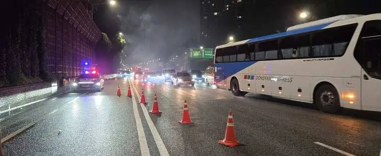
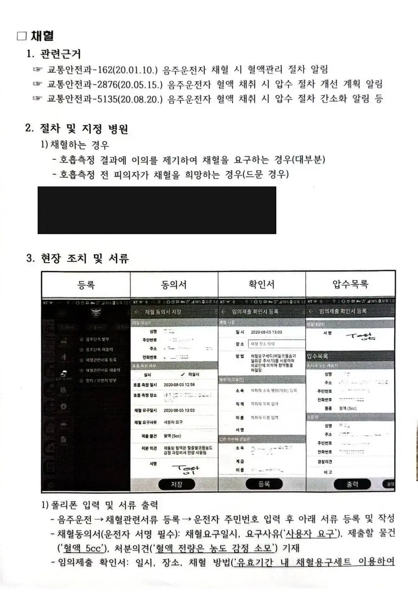
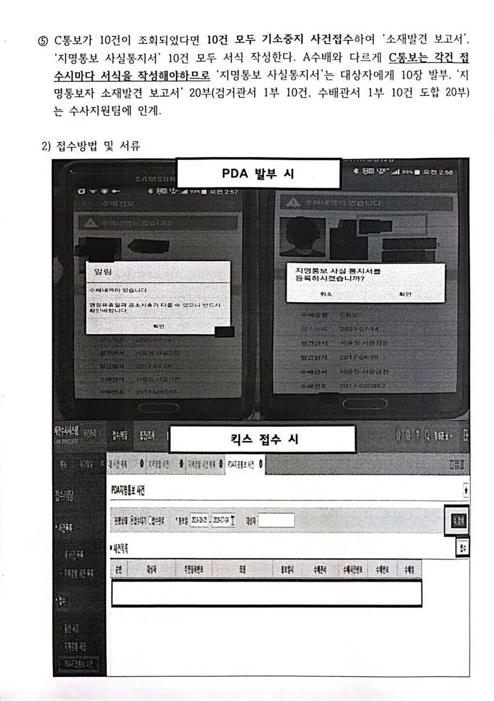
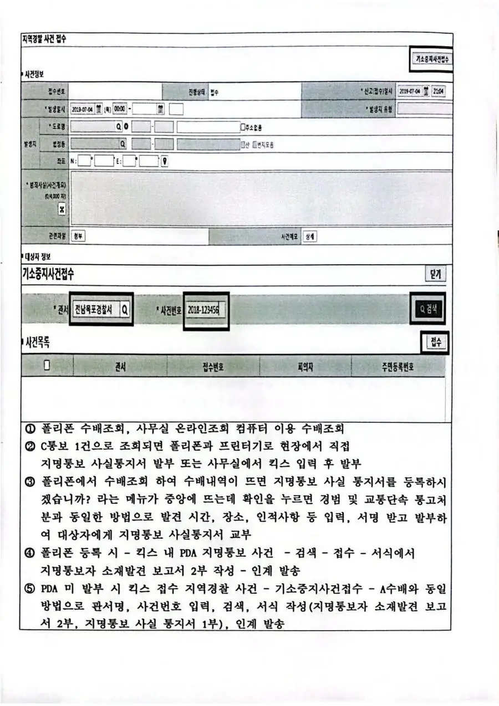
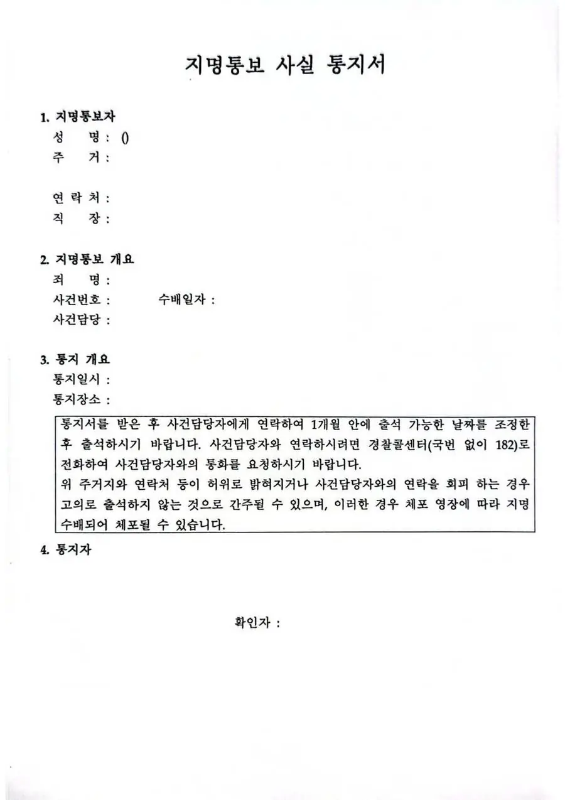
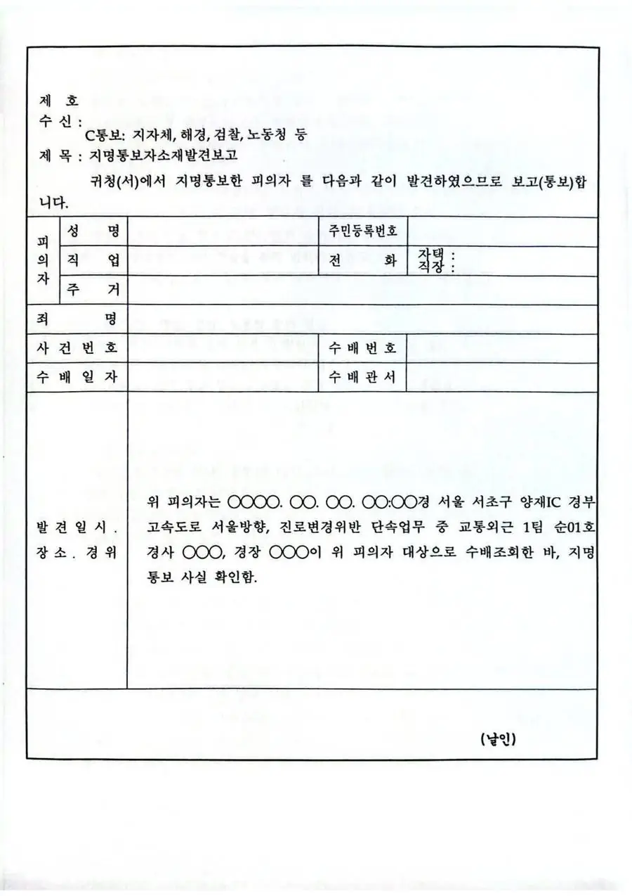
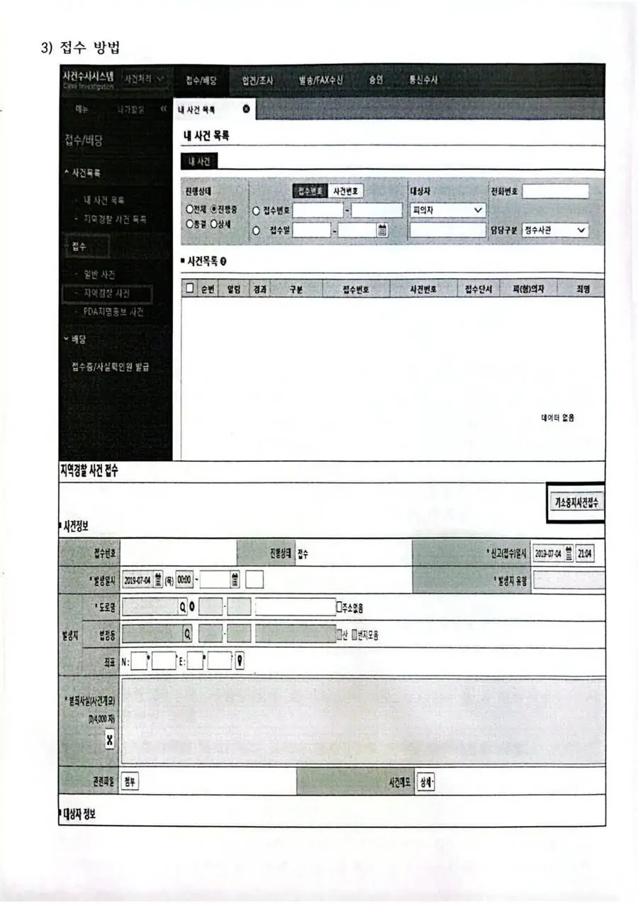
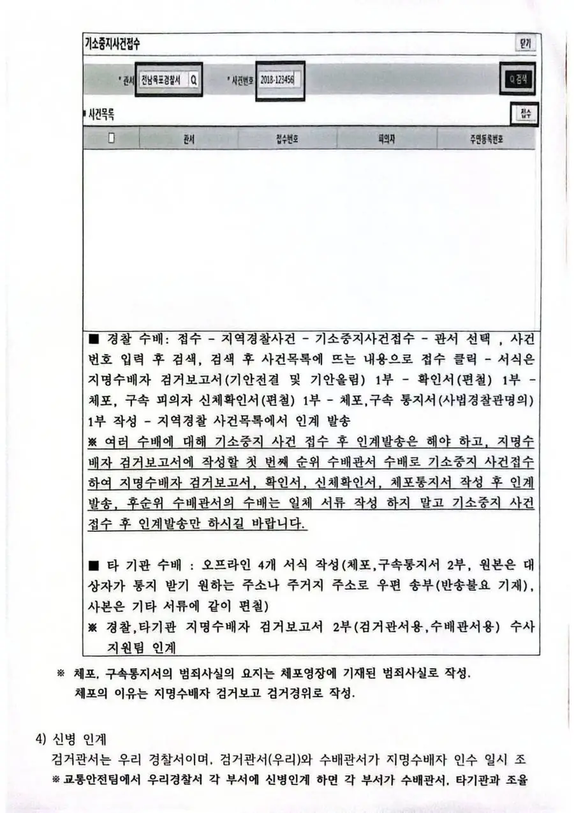

| 발견 | 11년이 한 일 | 데이터가 한 일 |
|---|---|---|
| 무단횡단 동선 | 그런 동선이 있다는 걸 안다 | — (통계에 코드가 없다) |
| 고속도로 보행 가설 기각 | 「보행자가 안 들어간다」 | 좌표–도로 거리 실계산 |
| 중앙차로 정류장 위험 | 「13톤 버스가 서는 자리」 | 대조군 · 정확검정 |
| 포털 | 무엇을 |
|---|---|
| 도로교통공단 opendata.koroad.or.kr | 법규위반 다발지 12종 · 8년 |
| 도로교통공단 TAAS | 보행노인 사상자 · 차대사람 사고 |
| 공공데이터포털 data.go.kr | 무인단속 · 교량 · 전용차로 · 신호 |
| UTIC utic.go.kr (경찰청) | 소통 · 돌발 · CCTV |
| 서울 열린데이터광장 data.seoul.go.kr | 버스 승하차 · 정류소 |
| 서울 T-Data t-data.seoul.go.kr | C-ITS 등 380건 |
| ITS 국가교통정보센터 its.go.kr | 표준 노드링크 |
| KOSIS · 국가법령정보 | 인구 통계 · 법령 원문 |
Invoke-WebRequest가 한글 응답을 깨뜨렸습니다. System.Net.WebClient + UTF-8로 전량 다시 받았습니다.| 무엇으로 세는가 | 배수 | p | 판정 |
|---|---|---|---|
| 일평균 승하차 인원 | 1.04 | 0.27 | 상관 없음 |
| 자료상 노선 수 | 1.03 | 0.72 | 상관 없음 |
| 실제 정차 노선 수 | 1.44 | 0.0054 | 있음 |
| 광역·직행좌석 노선 수 | 1.75 | 0.0015 | 여기서 갈림 |
주소지 시·도경찰청(교통민원실)에 운전면허 취소·정지처분 이의신청(도교법 §94). 심의에서 인정되면 취소→110일 정지 감경 등 처분이 줄어든다.
감경 사유(예): 운전이 가족 생계유지의 중요 수단 · 모범운전자 경력 · 3년 이상 무사고.
감경 배제(예): 음주 수치 0.1% 초과, 인적피해 사고, 측정 불응·도주, 과거 5년 내 음주 전력(2027.2.25부터 「2001.6.30 이후 전력」으로 확대 — 행정안전부령 제636호). 자세한 기준은 도교법 시행규칙 별표28.
이의신청과 별개로(동시 진행 가능) 중앙행정심판위원회에 청구. 온라인행정심판(simpan.go.kr)에서 무료로 직접 청구 가능 — 변호사·행정사 없이도 된다. 이의신청 결과를 통보받은 경우 그날부터 90일.
• 착한운전 마일리지: 경찰서·정부24에서 무위반·무사고 서약 → 1년 지키면 10점 적립, 정지처분 시 벌점에서 차감.
• 특별교통안전교육: 정지처분 대상자가 권장교육 이수 시 정지일수 20일 감경(도교법 §73).
• 처분벌점 40점 미만은 1년 무위반·무사고면 소멸.
질서위반행위규제법 §24의3: 경제적 어려움 시 분할납부·납부기일 연기 신청 가능. 신청처는 부과한 곳(경찰서 민원실 또는 시·군·구청). 체납 방치 → 가산금·번호판 영치로 커지기 전에 분납 약정이 답.
자동차세·과태료 체납 영치는 시·군·구청 세무과에서 분납 약정 시 번호판 반환 가능(위 체납 카드 참조). 생계형 차량은 지자체별 영치 일시해제(유예) 제도 문의.
기준: 2026.9 · 도교법 §94·§73, 시행규칙 별표28, 질서위반행위규제법 §24의3 — 개별 사안은 국가법령정보센터 원문 확인
정답: 무리한 추격 금지. 차량번호·차종·특징·방향을 채증·기록하고 무전 공조·수배. 추격은 2차사고와 시민 위험이 더 큼.
• 안전거리 유지하며 상황실 통보
• 교차로·보행자 밀집구간 진입 시 추격 중단
정답: 사고·작업 지점 후방 30~50m에 비스듬히(약 15도) 정차해 순찰차를 방패로. 경광등+비상등 동시 점등. 하차 전 사이드미러·후방 확인 후 차도측 문은 천천히.
• 갓길 끝 가드레일 옆 밀착 정차 금지(식별성 0)
정답: 경광등·사이렌으로 의사표시 + 서행·아이컨택으로 상대 양보 확인 후 진입. "사이렌 켰으니 비켜주겠지"는 금물 — 측면 충돌 위험.
정답: 차량 정면·진행경로에 서지 않기. 측면에서 응대, 필요 시 시동키 회수 절차. 위험 시 무리한 제지보다 물러나 채증+112 지원.
정답: 라바콘 후방 3중(약 50·100·150m 감각) + 불꽃신호기. 작업·당사자는 모두 차 흐름 바깥(가드레일 외측). 순찰차를 후방 방패로. 본선 위 장시간 체류 최소화.
정답: 거리 유지 + 채증(영상), 단독 제압 자제, 112 지원요청. 대응 멘트·법적 절차는 아래 [⚖️ 법적대응]·[💬 현장대응멘트] 참고.
정답: 발광봉·불꽃신호기 + 안전조끼 반사면 노출. 라바콘 야광, 순찰차 경광 유지. 우중·강풍 시 라바콘 추가·간격 확대.
정답: 안전 우선 — 도보·차량 무리한 추격보다 채증·인상착의·방향·번호 확보 후 수배·공조. 본인·시민 안전이 검거보다 앞선다.
서울시설공단 도로교통업무처 (서울구간 한정)
서울시설공단 단독
서울시설공단 단독 — 가드레일·표지판·노면
서울청 교통과 합동 (1차 보고 동시 발송)
서울시설공단 단독
서울시설공단 단독
서울청 교통과 합동
서울시설공단 도로교통업무처
① 119 구급 출동요청 → ② 교통조사계장 + 교통과장 → ③ 서울청 교통과 → ④ 시설공단 02-2290-6114
① 교통조사계장 + 교통과장 → ② 시설공단 02-2290-6114 → ③ 견인업체
① 시설공단 02-2290-6114 → ② 견인업체 → ③ 교통조사계장 보고
| 구분 | 대상 | 일수 |
|---|---|---|
| 결혼 | 본인 | 5 |
| 결혼 | 자녀 | 1 |
| 출산 | 배우자 | 20 둘 이상 출산 25 |
| 입양 | 본인 | 20 |
| 사망 | 배우자, 본인 및 배우자의 부모 | 5 |
| 사망 | 본인 및 배우자의 조부모·외조부모 | 3 |
| 사망 | 자녀와 그 자녀의 배우자 | 3 |
| 사망 | 본인 및 배우자의 형제자매 | 3 |
| 항목 | 내용 |
|---|---|
| 근거 | 국가공무원법 §71②4호 |
| 대상 자녀 | 만 12세 이하 또는 초등 6학년 이하 2026-06 공포 즉시 시행 · 종전 8세·초2에서 확대 |
| 기간 | 자녀 1인당 최대 3년 |
| 분할 | 횟수 제한 없음 |
| 허가 | 청원휴직 — 특별한 사정 없으면 승인 |
| 수당 | 최초 6개월 월봉급액 100% (1~3개월 상한 250만원 / 4~6개월 상한 200만원) 7개월째부터 80% (상한 160만원), 하한 월 70만원 지급기간은 휴직일부터 1년 이내 |
| 부모 모두 사용 | 두 번째 휴직자의 최초 6개월 상한 250만~450만원 |
| 항목 | 내용 |
|---|---|
| 시행일 | 2026-08-20 |
| 근거 | 남녀고용평등법 §19 |
| 대상 자녀 | 만 8세 이하 또는 초등 2학년 이하 |
| 사유 | 휴원·휴교·방학, 자녀 질병·사고 입원 등 단기 돌봄 공백 |
| 기간 | 1주(7일) 또는 2주(14일) 중 택 1 |
| 횟수 | 연 1회 ⚠️ 아래 미확정 항목 참조 |
| 신청 | 방학 사유는 개시 30일 전 / 휴원·휴교·질병 등 긴급 사유는 당일 신청 가능 |
| 기간 산입 | 전체 육아휴직 기간에서 차감 |
| 분할 횟수 | 기존 분할 3회에는 포함되지 않음 |
| 급여 | 일반 육아휴직과 동일 기준으로 일할 계산 지급 |
| 본인 | 배우자 | 본인 단기 | 배우자 단기 |
|---|---|---|---|
| 경찰(공무원) | 민간 | ✕ | ○ |
| 경찰(공무원) | 공무원 | ✕ | ✕ |
| 민간 | 경찰(공무원) | ○ | ✕ |
| 민간 | 민간 | ○ | ○ |
※ 부부가 각자 자기 신분의 제도를 동시에 쓰는 것은 법적으로 가능합니다. 기관·회사 내부 업무 공백 조율은 별도 사안입니다.
| 제도 | 시행일 |
|---|---|
| 공무원 육아휴직 자녀 12세·초6 확대 | 2026년 6월 (공포 즉시) |
| 공무원 난임휴직 | 공포 후 6개월 유예 |
| 민간 단기 육아휴직 | 2026-08-20 |
| 민간 배우자 3종 | 2026-09-18 |
| 항목 | 쟁점 | 확인처 |
|---|---|---|
| 단기 육아휴직 횟수 | 법령·노동부 자료는 「연 1회」, 일부 매체는 「자녀별 연 1회」 — 상충 | 고용노동부 1350 또는 시행규칙 원문 |
| 공무원 모성보호시간 | 조문·시간 수치 미확정 | 국가공무원 복무규정 원문 |
| 난임휴직 시행일 | 「공포 후 6개월」만 공표. 정확한 날짜 미확인 | 인사혁신처 공지·관보 |
위 단추를 누르면 나옵니다.
| 도로구간 | 1차 신고 | 2차 지원 |
|---|---|---|
| 경부(한남~양재) | 1588-2504 (도로공사) | 02-2290-6114 (시설공단) |
| 올림픽대로 | 02-2290-6114 | 02-2290-7979 |
| 내부순환로 | 02-2290-6114 | 02-2290-7979 |
| 강변북로 | 02-2290-6114 | 02-2290-7979 |
031-219-5114 — 경부고속도로 수원·오산 방면 중증사고 시 제1선택지
02-2072-2114 — 올림픽대로 반포·동작 구간 중증 시
02-3410-2114 — 경부고속도로 양재IC 인접, 5분 거리
후방에서 접근하는 차량 운전자가 확인할 수 있는 위치에 안전삼각대 설치. 종전 주간 100m/야간 200m 거리규정은 2017년 삭제(설치 중 2차사고 방지). 밤에는 사방 500m에서 식별 가능한 적색 섬광신호·전기제등·불꽃신호 추가. 미설치 시 단속 대상.
관할 기관 파악 후 즉시 신고. 시설공단 02-2290-6114 / 도로공사 1588-2504
무료견인(도로공사) → 안전지대 이동 후 사설 연락. 현장에서 사설 계약 = 고액 청구 위험.
법전 속 “안전하고 원활한 교통”은 누가 움직여 주지 않으면 글자일 뿐이다. 우리는 위험을 미리 막고(통제·수신호), 위험을 만드는 행위를 바로잡고(단속), 벌어진 일을 수습(사고처리)한다. 단속은 응징이 아니라 다음 사고를 막는 예방이다.
진행 중 사건·미회수 장비·통제 중 구간을 반드시 구두+메모로 인수. "없습니다" 답변도 기록.
오늘 발생 사건 처리 단계(KICS 입력 여부)·예정 사항을 명확히. 모호한 인계가 다음 근무자의 사고가 됩니다.
교통순찰·단속 등 정상 근무.
소통관리 위주 근무
• 교통순찰차 — 음주단속 자제
• 오토바이 — 순찰근무 금지 → 순찰차 동승 등 전환
• 현장근무 — 고정근무 지양
※ 필요시 30분 이내 3교대 근무(1시간 이상 휴게)
긴급 소통관리 및 상황근무
• 교통순찰차 — 음주단속 금지
• 오토바이 — 순찰근무 금지 → 순찰차 동승 등 전환
• 현장근무 — 고정근무 금지
※ 교통사고 등 불가피한 경우 30분 이내 교대근무
폭염경보와 동일 적용 — 긴급 소통관리 및 상황근무(음주단속·오토바이 순찰·현장 고정근무 금지, 불가피시 30분 이내 교대).
기상특보 모니터링 → 시설공단(02-2290-6114)·구청 제설 공조 확인 → 취약지점 염화칼슘 적치 확인 → 견인업체 대기 점검
경부 서울구간·올림픽대로·고가도로·교량 상판은 지면보다 먼저 결빙(블랙아이스). 새벽 02~07시 취약시간 순찰 강화, 결빙 의심 즉시 시설공단 통보.
헌릉로 등 고갯길은 선제 통제 판단. 등판 불가 대형차를 먼저 차단 — 한 대가 멈추면 도로 전체가 마비됩니다. 미끄럼 다발지점 라바콘, 체인 미장착 차량 진입 안내.
통제구간 지정 → 우회로 안내 → TBS·교통정보센터 전파(내비 반영) → 상황보고. 통제가 늦으면 고립차량 구조가 본 업무가 됩니다.
| 등급 | 발령 기준 | 동원 경력 |
|---|---|---|
| 갑호 | 호우·태풍·대설 등 경보 발표 + 대규모 교통혼란 발생·발생 가능성 현저 | 가용경력 최대 100% |
| 을호 | 호우·태풍·대설 등 주의보 발표 + 교통혼란 예상 | 가용경력 최대 50% |
※ 기상특보 미발표라도 발령기준 후단의 교통혼란 대처 필요시 비상발령 가능
| 노선 | 주요 침수취약구간 (총 29.3km) | 관할서 |
|---|---|---|
| 동부간선 | 월계1교~중랑교 등 25.1km | 노원·중랑·광진·종암·동대문·성동 |
| 올림픽대로 | 여의하류~한강철교 하부 3.4km | 동작·강서·영등포 |
| 강변북로 | 한강철교 하부 0.8km | 용산·마포 |
침수 진행 순서
• 동부간선: ① 월계1교 → ② 월릉교 → ③ 중랑교
• 올림픽대로·강변북로: ① 여의상류IC → ② 여의하류IC → ③ 여의교 주변(본선) → ④ 여의상류~하류IC(본선)·한강철교 하부(강변북로) → ⑤ 동부간선로(용비교) → ⑥ 한강철교(올림픽대로 본선)
| 위치(기준) | 경계 (통제준비) | 위험 (교통통제) | 침수수위 | 관할 |
|---|---|---|---|---|
| 월계1교·동부간선 (자체 수위표) | 15.43m | 램프 15.83m 본선 16.23m | 17.23m | 노원 |
| 용비교·동부간선 (청담대교 수위) | 7.60m | 8.10m | 9.10m | 성동 |
| 여의상류IC·올림픽 (한강대교 수위) | 3.90m | 4.40m | 5.40m | 영등포 |
| 여의하류IC·올림픽 | 4.25m | 4.75m | 5.75m | 영등포 |
| 여의교 주변 본선·신월여의지하도 | 5.03m | 5.53m | 6.53m | 영등포 |
| 여의교↔여의하류IC 본선 | 5.83m | 6.33m | 7.33m | 영등포 |
| 한강철교 남단·올림픽 | 6.53m | 7.03m | 8.03m | 동작 |
| 한강철교 북단·강변북로 (한강대교 수위) | 5.83m | 6.33m | 7.33m | 용산·마포 |
흐름: 수위관측·상황유지 → 경계수위(통제 준비·수위관측반 출동·복구팀 준비) → 위험수위(선제 통제·차량우회·거점 통제지원) → 침수(통제·인명구조) → 복구(위험수위 이하 도달 시) → 해제(통행 재개)
호우특보 + 팔당댐 방류 정보 + 만조 시각. ⚠️ 방류와 만조가 겹치면 한강 수위가 급격히 상승 — 통제 판단을 앞당길 것.
🚶 5.5m 이상 — 보행자 통행 전면 금지 · 인도 진입 차단 (반포지구대 조치)
🚗 6.2m 이상 — 양방향 차량 통행 차단 (서초교통 조치)
🌊 6.5m — 완전 잠수 시작 · 다리 전체 침수 — 전 인원·차량 철수 확인
원칙: 보행자 먼저, 차량 다음. 진입로 차단 절차 + 차단시설은 시설공단 협조. 수위는 한강홍수통제소 실시간 확인 — 팔당댐 방류+만조 중첩 시 기준 도달이 예상보다 빠릅니다.
침수 시 진입 차단 우선. 고립자 발생 시 119 공조 (소방구급 탭 원터치).
차량 다수 진입 상태면 추가 진입 차단이 1순위 → 주차 차량 대피 안내(공원 안내방송 공조) → 견인 대기. 대피 안내가 늦으면 침수 차량 수백 대가 됩니다.
침수 차량 무리한 재시동 금지 안내(엔진 파손), 신호등·가로등 주변 감전 위험 접근 통제.
진흥아파트 사거리 · 서이초교 사거리는 저지대 상습 침수지점으로, 현장 경험상 약 10년에 한 번꼴로 반드시 침수가 발생해 왔습니다(강남역~서초 일대 대침수 시 동반). 집중호우 시 이 두 곳은:
① 지구대·파출소(지역경찰)와 합동 배치가 기본 — 교통 단독 대응 불가
② 빗물 역류·맨홀 분출이 시작되면 즉시 차량 우회 + 보행자 접근 차단 (지하·반지하 진입 경고)
③ 구청(치수·배수 담당) 공조 요청 병행
④ 침수 이력이 있는 해라고 안심 금지 — 주기는 경향이지 보장이 아닙니다. 호우특보 시마다 선제 점검.

1. 미터링/게이팅(metering·gating): 용량 초과 유입을 상류에서 끊어 하류를 보호.
고속도로 진입램프 신호등과 같은 원리를 라바콘으로 구현(passive metering).
2. 교차로 박스 보호(intersection box protection): 교차로 내부를 빈 채로
유지해야 모든 방향이 순환한다. 점령당하면 grid-lock. 해외 "Keep Clear / Box Junction"
제도와 동일 사상.
3. 수요 > 용량의 비가역성: 포화 상태에서 신호·차로 조정은 정체를 옮길 뿐
총량을 못 줄인다. 남는 건 수요를 시간·경로로 분산시키는 것뿐.
4. 노동 절감 통제(labor-saving control): 시설(라바콘)이 인력을 대체하면
통제가 지속가능해지고, 풀린 인력을 상류 우회 유도 등 더 높은 가치에 재배치할 수 있다.
① 사전(신호): 시설담당 협조로 지상 직진 신호주기 피크타임 가변 단축(과다 단축 금지).
② 현장(라바콘 유입조절): 빠지는 만큼만 들여보냄. 수신호가 주(主), 라바콘이 보조.
③ 통행공간 확보: 교차로 안 진입 강제 정지, 통행공간 비우기를 최우선으로.
"이곳은 통행량이 극심해 모든 방향을 동시에 통행시킬 공간이 물리적으로 없습니다. 라바콘으로 차량 유입을 조절해 통행할 수 있는 공간을 확보하고 전체 교통 흐름을 관리하는 것이, 이곳에서 가능한 유일한 방법입니다. 잠시 지체되시더라도 전체가 마비되는 것을 막기 위한 조치이니 협조 부탁드립니다."
□ 피크타임 진입 전 시설담당 직진 신호주기 단축 확인
□ 라바콘 정지선 전방 배치(교차로 안 배치 금지)
□ 혼잡 2방향 우선 제한 + 터미널고가→삼호가든 진입 차로폭 좁히기
□ 교차로 안 통행공간 확보 — 유입 조절 시작
□ 10~15분 주기 라바콘 재배치
| 메뉴 | 무엇이 되나 |
|---|---|
| 주요 교통사고 통계 | 전국·시도 단위 통계 요약 |
| 교통사고 GIS 분석 | 🔴 지도 위에서 보는 것. 현장용은 이쪽이다 |
| 기능 | 현장에서 어떻게 쓰나 |
|---|---|
| 관심지점검색 (장소 · 도로명) | 지금 서 있는 교차로 이름이나 도로명을 넣으면 그 지점 사고가 지도에 뜬다 |
| 사고 다발지역 | 관내 어디가 다발지점인지 지도로 본다 |
| AI위험예측지역분석 | 🔴 사고가 나기 전에 위험을 예측한다는 기능. 아직 우리가 안 써봤다 |
| 사고부문 4종 | 사망 / 중상 / 경상 / 부상신고 를 켜고 끈다 |
| 목록 · 2분할 · 전체보기 | 지도와 목록을 같이 본다 |
| 메뉴 | 무엇에 쓰나 | 우리가 썼나 |
|---|---|---|
| 사고분석 | 경찰서별 · 지역별 전수 조회. 「우리 관서 10년에 몇 건」이 여기서 나온다 | 🟢 썼다 |
| 다발지분석 | 지자체별 / 법규위반별 다발지역 | 🟢 썼다 |
| 전후사고 비교분석 | 🔴 시설 개선 「전·후」를 잰다. 카메라·신호 바꾼 뒤 정말 줄었는지 | ⬜ 아직 |
| 사고 반경분석 | 🔴 좌표 중심 반경 조회. 「정류장 앞 100m」로 좁혀지는지 확인 대상 | ⬜ 아직 |
| 보호구역 사고조회 | 어린이·노인 보호구역 | ⬜ 아직 |
| 융합분석 · 빅데이터 분석 | 도로 노선 단위 · 대량 집계 | ⬜ 아직 |
| 함정 | 무슨 일이 생기나 |
|---|---|
| 연도를 바꾸면 경찰서가 리셋된다 | 서초를 골랐는데 강남 수치가 나온다 |
| 상해정도 기본값이 「사망」 하나뿐 | 4종을 안 켜면 사망사고만 센다 |
| 조회 범위는 최대 3년 | 10년을 넣으면 조용히 1년만 조회된다. 화면은 멀쩡하다 |
| 코드 | 조건 | 언제 쓰나 |
|---|---|---|
| 36 | 횡단보도외 횡단중 | 무단횡단 실태 — 정류장·중앙선 보행 |
| 38 | 보행자 | 보행 사고 전반 |
| 43 | 노선버스 | 정류장·전용차로 구간 |
| 45 | 야간 | 조도·시야 개선요청 근거 |
| 05 / 46 | 대형사고 / 과속(2021~) | 중대사고·속도 배치 |
| 07 / 09 | 음주 / 뺑소니 | 단속 배치 근거 |
| 33 / 22 / 23 | 자전거 / 택시 / 렌터카 | 차종별 |
| 27·29·39·41·44 | 어린이 계열 5종 | 스쿨존 |
| 25·30·42·47 | 노인 계열 4종 | 고령 대응 |
| 35 | 회전교차로 | 시설 |
| 2016 | 2025 | 10년 | |
|---|---|---|---|
| 사고 | 1,631 | 1,690 | +3.6% · 누계 16,925건 |
| 사망 | 11명 | 8명 | 누계 84명 |
| 치명률 | 0.688% | 0.403% | −41% |
| 조건 | 건수 | 전수 대비 |
|---|---|---|
| 전수 | 4,961건 | 100% |
| 보행자 사고 | 803건 | 16.2% |
| 노선버스 사고 | 308건 | 6.2% |
| 횡단보도외 횡단중 | 81건 | 보행자 사고의 10.1% |
| TAAS가 주는 것 | TAAS가 못 주는 것 |
|---|---|
| 사고가 난 뒤의 집계 | 아직 안 난 위험 |
| 연 1회 · 주야 2분할 | 몇 시에 위험한가 |
| 지점(교차로) 단위 | 정류장 앞 30m 같은 지점 안 세부 위치 |
| 법규위반 2종만 공표 | 과속·음주 다발지점 |
| 사고 결과 | 어떤 행태가 그 사고를 만들었나 |
| 확정 통계 | 지난달 일 — 게시까지 시차가 있다 |
| 항목 | 값 |
|---|---|
| 관내 다발지 | 65지점 (조회 원자료 72 − 방배서 관할 7) |
| 사고 / 중상 / 경상 | 377 / 315 / 122 |
| 사망 | 10명 — 추정이 아니라 전수 |
| 자료 | KoROAD 사고다발지 12종 · 8년치 · 좌표 클러스터링 |
| 지점당 | 정류장군 | 대조군 | 배수 |
|---|---|---|---|
| 사고 | 6.30 | 5.52 | 1.14배 |
| 중상 | 6.30 | 4.05 | 1.56배 |
| 사망 | 0.348 | 0.048 | 7.3배 |
| 말하지 않는 것 | 왜 |
|---|---|
| 중앙차로 정류장이 사망의 원인이다 | 인과를 말할 수 있는 자료가 아니다 |
| 스크린도어를 놓으면 사망이 7배 준다 | 효과 추정치가 아니다 |
| 그 사망사고가 버스 사고다 | 원자료에 가해차종이 없다 |
| 정류장 폭 30cm는 실측치다 | 체감이다. 아직 재지 못했다 |
| 기관 | 받은 것 | 상태 |
|---|---|---|
| 도로교통공단 | 사고다발지 12종 서초구 8년 전수 | 🟢 완료 |
| 도로교통공단 | 링크기반 위험지역 11행 | 🟢 완료 |
| 서울 열린데이터광장 | 버스정류소 11,248행 (1,000행씩 12회) | 🟢 완료 |
| 서울 열린데이터광장 | 지하철 승하차 618행 | 🟢 완료 |
| 공공데이터포털 | 전국버스전용차로 142행 (서울은 1행) | 🟢 완료 |
| ITS 국가센터 | 표준노드링크 1,556,560행 · 해제 836MB | 🟢 완료 |
| 서울 T-Data | C-ITS 교차로 1,000행 | 🟡 전체본 없음 |
| 서울특별시 | 고시 제2025-499호 · 89구간 205.7km | 🔴 PDF만 |
가입 기관 8곳 · 인증키 8종 · KoROAD 29종 승인 · 국가법령정보 469종.
🔴 그런데 실제 분석에 들어간 것은 3곳이다. 나머지는 받아만 두고 아직 못 썼다.
⚠️ 인증키는 이 앱에 없다. 실시간 호출도 하지 않는다.
| 구분 | 횟수 | 무엇 |
|---|---|---|
| 🟢 자료를 받음 | 37 | — |
| 🟡 자료 없음 | 27 | code=03 — 정상 응답이다. 해당 연도에 자료가 없을 뿐 |
| 🔴 문이 안 열림 | 10 | 파라미터 오류 8 · 404 1 · 날짜 미상 1 |
⚠️ 「성공률 32%」라고 적었던 적이 있는데 폐기했다. 분모와 분자가 어긋난 값이라 로그에서 재현되지 않았다.
74회 두드려 37회 열었다가 맞다.
🟢 그중 하나는 풀렸다 — 도로위험지수 API가 요구한 것은 시도·시군구 코드가 아니라 구간 좌표(LineString)와 차종코드였다. 「지역」이 아니라 「도로 구간」으로 부르는 API였다. 문서를 끝까지 읽어서 알았다.
🔴 구조적으로 막힌 것 — KoROAD 개방 16종 어디에도 사고 1건 단위 원시자료가 없다. 보행자 행동유형 · 사고형태 · 가해차종 · 발생시각 · 기상이 전부 없다. 원본 필드는 16개가 전부다.
우리가 안 뽑은 게 아니라, 개방 체계에 존재하지 않는다.
서초1교 「관내 2위」를 24시간 만에 취소했다.
좌표를 도로에 붙여보니 하나가 아니라 네 개였다. 성격이 다른 네 문제를 반경 300m가 한 봉투에 담고 있었다. 게다가 그곳은 이미 카메라를 설치해 위반이 크게 준 곳이었다. 「손봐야 할 곳」이 아니라 「이미 손본 곳」이었다.
외부 AI 오답 16회를 유형별로 남겼다.
없는 필드 창작 · 좌표계 오답 · 존재하지 않는 데이터셋 번호.
🔴 가장 위험했던 것 — 오류를 알려주자 세 개가 모두 사과했고, 세 개가 모두 같은 방향으로 또 틀렸다. 코드를 한 번 돌려서 30초 만에 잡았다.
「사과」와 「수렴」이 겹칠 때가 가장 설득력 있어 보인다. 그때가 제일 위험하다.
🟢 AI가 맞힌 것도 있다. 표준노드링크 경로는 외부 AI가 알려줬고 이번 분석의 결정적 입력이 됐다.
AI를 못 믿자는 게 아니다. 검증할 수 있으면 쓸 수 있다는 것이다.
출처 — 도로교통공단 교통사고분석시스템(TAAS)
자료링크 — https://taas.koroad.or.kr
※ TAAS 이용조건(「제공된 자료를 활용 시 출처 및 자료링크를 명시해 주시기 바랍니다」)에 따라 표기함.
※ 이 탭의 화면 구성·메뉴 이름은 2026-08-01 직접 열어 확인한 것이다. TAAS가 개편되면 달라질 수 있다.
A. 사고차량 후방 30~50m에 비스듬히(약 15도 각도) 정차한다.
• 순찰차가 후방차량 시야 차단 + 충격흡수 역할
• 비상등 + 경광등 동시 점등 유지
• 차량 후미에 라바콘 즉시 추가 설치
• 갓길 끝 가드레일 옆 정차 절대 금지 (식별성 0)
A. ① 운전자·승객 안전지대 이동 → ② 라바콘 후방 설치 → ③ 도교법 §66 안전삼각대 확인 → ④ 견인업체 출동 요청 → ⑤ 시설공단 02-2290-6114 통보 (노상물 청소 필요 시) → ⑥ 사후 보고서 작성
A. 서초서 관할 4대 빈발구간
• 대법원 (서초대로) — 재판 선고일·기자회견
• 대검찰청 (반포대로) — 출석조사·압수수색 이슈
• 예술의전당 (남부순환로) — 대형 공연·전시 행사
• 서리풀공원 — 집회·시민단체 활동 빈발
※ 대법원·대검 인근은 사전 동선 확인 필수
A. 도주(뺑소니) 사고 KICS 입력 시 적용 법조:
• 인명피해 있는 도주 → 특정범죄가중처벌법 §5의3
• 인명피해 없는 도주 → 도로교통법 §54 미신고 + §156
• 음주 + 도주 → 특가법 §5의11 위험운전치사상 검토
※ KICS 정확한 코드는 [참고자료 > 법령DB]에서 검색
A. 부상자 진술이 우선.
• 의식 명료 시 즉시 진술 청취 (병원 이송 전 30초 이내)
• 핵심 5W: 누가·언제·어디서·어떻게·왜
• 차량 보존은 라바콘 + 사진 다각도 채증으로 대체 가능
• 의식 흐릿할 경우 진술 강요 금지 → 119 우선 호출
A. 최소 6개, 권장 10개 이상.
• 자동차전용도로: 50m·100m·150m 3중 설치 = 6개
• 다차로 차단 시 추가 4개 필요
• 야광 라바콘 50% 이상 비율 유지 (야간 대비)
• 순찰차 트렁크에 불꽃신호기 6개 + 예비 배터리 동승
9~12인승 6인 미만 탑승 카니발·스타렉스 등 / 일반 승용 진입 → 도교법 §15·§61
전용차로 옆 화물 지정차로 위반 → 도교법 §14·시행규칙 별표9 (벌점 10점)
도교법 §49①10호 (승용 6만원·벌점 15점)
도교법 §39⑤ (승용 4만·승합 5만·이륜 3만원·벌점)
불법튜닝·적재함 구조변경·소음기(105dB↑) → 자관법 §34→§81 1년/1천만원 · 등화착색 등 안전기준은 §37 과태료
임의 증축·확장·보강 / 도어 힌지 높이 적재함 상단 +200mm 초과 금지 / 평판·게이트 개조
실내 하강 스위치 불법장착(단속 때만 내림)·축 임의 증설 → 과적 직결. 가변축은 차량 외부 조작이 원칙
고광도 전조등 개조·작업등 과다/색상 변경·후미등 착색
후부안전판 제거·불량, 불법 철제(강관)범퍼 설치, 규격외 가드
임의 판스프링 추가(불법 보강)·현가장치 변경 → 과적·전도 위험
소음기 제거·변경(105dB↑ 폭음)·배기구 개조
한남대교 교량 하부 ~ 반포대교 교량 하부 (고가 상판 포함)
합동·청소·시설복구 모두 서울시설공단 단독 (02-2290-6114)
사망·중대사고 시 서울청 교통과 합동
반포대교 ~ 한남대교 구간
합동·청소·시설복구 모두 서울시설공단 단독 (02-2290-6114)
사망·중대사고 시 서울청 교통과 합동
서초대로 · 강남대로 · 반포대로 · 사평대로 · 남부순환로
서초서 단독 (청소는 서초구청 환경과 통보)
| 도로 | 청소 | 순찰합동 | 사망·중대 |
|---|---|---|---|
| 경부 서울구간 | 시설공단 | 시설공단 | 서울청 교통과 |
| 올림픽대로 | 시설공단 | 시설공단 | 서울청 교통과 |
| 일반도로 | 서초구청 | 서초서 단독 | 서초서 단독 |
키보드의 마이크 버튼을 누르면 가장 빠르고 정확하게 받아쓰기됩니다. 받아쓴 내용은 그대로 입력칸에 들어갑니다.
키보드 오른쪽 아래(스페이스바 옆 또는 🌐 지구본 아이콘 옆)의 마이크(🎤)를 터치하세요.
입력칸을 터치한 뒤, 키보드 상단 툴바의 마이크(🎙️) 버튼을 터치하세요.
키보드 우측 상단 툴바의 마이크(🎙️) 버튼을 터치하세요.
①무전보고 ②과장·계장 카톡보고 ③서장 카톡보고
과장·교통조사팀장에게 세부 카톡보고서 전달
현장확인→보고서 작성→과장 검토→서장 보고
사망·중대·연예인 등 필요시 예상보고서 작성→과장→서장
감지 — · 측정 —
시작 — · 종료 —
운전자 본인 휴대폰으로 보험사 콜센터 또는 다이렉트 가입. 차량번호 + 주민번호면 진행된다. 차량 명의자가 다르면 명의자 본인이 전화해야 한다 — 현장에서 막히는 지점이 대개 여기다.
가입 완료 문자를 보여줘도 보험기간 「개시 일시」를 확인하지 않으면 의미가 없다. 자동차보험은 원칙적으로 보험기간 첫날 24시(자정)부터 효력이라, 가입 당일 낮에는 여전히 무보험인 경우가 많다. 사내 지침도 「통상 의무보험을 가입한 당일에는 보험적용이 되지 않음」으로 보고 있다.
👉 증권·문자에 찍힌 「보장 개시 일시」를 직접 눈으로 볼 것. 「가입했어요」라는 말만 듣고 보내면 안 된다.
개시 일시가 현재 시각보다 앞이면(즉시 개시로 설정된 상품) 증권 화면을 캡처해 서류에 첨부하고 운행시킨다. 이때 비로소 「조심해서 가세요」가 아니라 보험이 붙은 차를 보내는 것이 된다.
갓길·안전지대·근처 주차장에 차를 두게 하고 사람만 귀가시킨다. 개시 이후(통상 그날 24시 이후) 가져가라고 안내한다. 보험이 안 붙은 차를 움직이라고 할 수는 없다 — 그 사이 사고가 나면 책임 소재가 단속 경찰관에게 온다.
대리운전 · 가족 인도 · 견인 중 하나를 고르게 하고, 어떤 방법으로 처리했는지 진술서에 적어둔다.
| 상황 | 처리 |
|---|---|
| 1년 내 전력 없음 · 사고 없음 | 통고처분 — 범칙금액은 차종·용도별로 다르다(아래 표). 통고서 받은 날부터 10일 이내 납부하면 그 범칙행위로 다시 벌받지 않는다(법 §51·§52①·§53①). 통고처분권자는 시장·군수·구청장 또는 경찰서장 |
| 1년 이내 같은 위반 재범 | 형사 — 「상습」으로 보아 범칙자에서 제외(시행령 §38①). 1년이 지난 재범은 여전히 통고처분 대상이다 — 「2회째면 무조건 형사」가 아니다 |
| 가입명령 후 2개월 미가입 | 형사 — 법 §6③ 가입명령을 받고 2개월 내 미가입한 사람은 범칙자에서 제외(시행령 §38②1호) |
| 성명·주소 불확실 또는 통고서 수령 거부 | 통고처분 불가(법 §51① 단서 1·2호) → 지체 없이 관할 지검·지청 송치(§53②2호). 현장에서 인적사항 특정이 안 되면 통고처분 자체를 할 수 없다 |
| 사고 야기 | 범칙행위 정의에서 애초에 제외된다(법 §50① 괄호 · 시행령 §38②2호). 가·피해 불문 적발보고서 + 교통사고 발생보고서 → 신병 교통수사팀 인계. 동행 거부 시 현장에서 현행범 체포 |
| 미납 또는 이의제기 | 송치 — 납부기간 내 미납(§53②3호), 납부기간에 시장등·경찰서장에게 이의제기(§52② → §53②4호) |
| 미가입 자체(운행 안 함) | 과태료 — 시·군·구 소관. 경찰 업무 아님. 민원인에게 담당 부서 안내 |
| 구분 | 범칙금 |
|---|---|
| 사업용 승합자동차 | 200만원 |
| 사업용 화물·특수·건설기계·승용 | 100만원 |
| 비사업용 승합·화물·특수·건설기계 | 50만원 |
| 비사업용 승용자동차 | 40만원 |
| 이륜자동차 | 10만원 |
의무보험 미가입 과태료는 시·군·구 소관이다. 경찰이 부과한 것이 아니고 취소·감액 권한도 없다. 차량 등록지 구청 교통(자동차)행정 부서로 안내한다. 경찰이 처리한 것은 운행에 대한 범칙금·형사 건이라는 점을 구분해서 설명해야 민원이 두 번 오지 않는다.
금액 기준(자배법 시행령 별표5 · 대인배상Ⅰ 미가입 기준) — 비사업용 자동차는 10일 이내 1만원, 11일째부터 1일 4천원 가산, 상한 1대당 60만원. 이륜자동차는 6천원 / 1일 1천200원 / 상한 20만원. 사업용은 3만원 / 1일 8천원 / 상한 100만원. 「왜 이렇게 많이 나왔냐」는 미가입 일수 때문이라고 설명하면 대부분 납득한다.
가입은 했지만 이전 보험 만료일과 새 보험 개시일 사이에 공백이 있는 경우가 대부분이다. 보험사 가입증명서(개시 일시가 찍힌 것)를 받아 구청에 이의 제출하도록 안내. 공백이 실제로 있으면 과태료는 유지된다.
의무보험 장기 미가입·과태료 체납 차량에 대한 번호판 영치도 시·군·구 소관이다. 경찰의 영치(주차위반 등)와 근거가 다르다. 어느 기관이 영치했는지부터 확인해 주는 것이 민원 해소의 절반이다.
통고처분은 납부하면 그 범칙행위로 다시 벌받지 않는 유리한 처분이라는 점을 먼저 설명한다(법 §53①). 다투는 방법은 두 가지다 — ⓐ 납부기간(10일) 안에 시장등 또는 경찰서장에게 이의제기(법 §52②) ⓑ 그냥 납부하지 않는 것. 어느 쪽이든 사건은 검찰로 송치된다(법 §53②3·4호). 형사절차로 가면 벌금이 범칙금보다 커질 수 있다(법정형은 1천만원 이하). 선택지를 그대로 알려주고 본인이 고르게 한다.
※ 천재지변 등 부득이한 사유로 기간 내 못 냈다면 사유가 없어진 날부터 5일 이내 납부할 수 있다(법 §52① 단서).
이 민원을 막는 방법은 현장에서 하나뿐이다 — 주차 가능한 곳을 지정해 주고, 어디에 뒀는지 진술서에 적는 것. 갓길·안전지대는 임시일 뿐이라 「오늘 24시 이후 반드시 이동」을 말로 끝내지 말고 적어야 한다.
| 무엇을 했나 | 무엇을 쓰나 |
|---|---|
| 발생보고 | 발생보고서 |
| 임의동행 | ① 임의동행보고서 ② 임의동행동의서 |
| 사건발생 · 검거보고 | 사건발생 · 검거보고서 |
| 현행범체포 | ① 현행범체포서 ② 권리고지확인서 ③ 신체확인서 ④ 체포통지서 |
| 긴급체포 | ① 긴급체포서 ② 권리고지확인서 ③ 신체확인서 ④ 체포통지서 |
| 무엇을 했나 | 무엇을 쓰나 |
|---|---|
| 경범 통고처분 | PDA 발부 |
| 즉결심판 | PDA 발부 또는 즉결접수 후 — ① 통지서 ② 임의동행동의서 ③ 단속경위서 |
| 풍속 | · 발견 시 → 사건접수 · 미발견 시 → 미단속보고 |
| 구분 | 무엇을 쓰나 |
|---|---|
| 가정폭력 | 응급조치보고서 + 긴급임시조치 결정서 · 확인서 · 통지서 · PDA — 가정폭력 위험성 조사표 |
| 아동학대 18세 미만 | 응급조치보고서 + 응급조치결과보고서 + 긴급임시조치 결정서 · 확인서 · 통지서 · PDA — 긴급응급조치 판단조사표 |
| 스토킹 | 응급조치보고서 + 긴급응급조치 결정서 · 확인서 · 통지서 · 피해자 권리안내서 · 스토킹 경고장 |
| 누가 | 무엇을 쓰나 |
|---|---|
| 청구인 | 보상금 지급 청구서 교체영수증 · 신분증 · 통장 사본 |
| 경찰관 | ① 현장조치 확인서 ② 파손 전후 · 현장 사진 ③ 112신고사건처리표 ④ 근무일지 사본 |
| 구분 | 현장에서 무엇을 하나 |
|---|---|
| A수배 지명수배 | 체포한다. 미란다 고지 → 형사팀 인계 |
| B수배 형집행장 | 벌금 미납이다. 미란다 고지 후 형집행. 납부하면 그 자리에서 귀가 |
| C통보 지명통보 | 체포하지 않는다. 현장에서 폴리폰으로 끝난다 |
| 겹칠 때 | 여러 건이면 경찰 지명수배 1건만 작성하고 그 안에 전부 기록. A+B면 A서류에 B내용 포함 |
| 제시한 것 | 적용 |
|---|---|
| 타인의 실물 면허증 | 공문서부정행사(형법 §230) — 2년 이하 징역·금고 또는 500만원 이하 벌금 [A등급] |
| 면허증 사진·이미지 파일 | 공문서부정행사 적용 곤란 — 문서 자체를 행사한 것이 아니다. 다른 죄명을 찾아야 한다 |
| 공식 모바일 운전면허증 | 도로교통법 계열로 검토 [항·호 미검증] |
| 가짜 모바일 화면·조작 캡처 | 전자기록 위·변조 검토 |
| 면허증 양도·대여 | 도로교통법 — 주는 쪽도 처벌된다 |
| 제시한 것 | 적용 |
|---|---|
| 타인의 실물 주민등록증 | 주민등록법 — 다른 사람의 주민등록증 부정사용 [항·호 미검증] |
| 주민등록증 이미지 파일 | 주민등록법 — 사진·이미지 제시는 실물과 별개 조항으로 다룬다 [항·호 미검증] |
| 공식 모바일 주민등록증 | 주민등록법 — 실물과 같은 효력. 타인 것을 쓰면 부정사용 [항·호 미검증] |
| 가짜 모바일 화면·조작 캡처 | 전자기록 위·변조 + 주민등록법 검토 |
| 주민등록번호만 불러줌 | 주민등록법 — 번호 부정사용. 카드가 없어도 성립할 수 있다 [항·호 미검증] |
| 확인 | 안 되면 |
|---|---|
| 인적사항이 확실한가 | 불확실하면 통고처분 자체가 불가 → 신원 확보가 먼저 |
| 통고서 수령을 거부하나 | 거부면 통고 불가 → 즉결심판 |
| 범칙금 대상 위반인가 | 형사입건 대상이면 즉결이 아니라 발생보고 |
| 방법 | 현장 조치 |
|---|---|
| 계좌이체 | 1394(통합대응단) 경유해 은행에 즉시 지급정지 → 피해신고확인서 발급 → 피해구제신청 안내. 환급절차는 1332(금감원) |
| 직접전달 특정장소 보관 | 수거책을 만날 예정이면 현장출동·검거. 지역경찰·형사팀 공조. 피해자는 평소처럼 행동하게 한다 |
| 상품권 | PIN을 전송했으면 발행업체에 즉시 취소 가능 여부 확인 |
| 무엇을 했나 | 조치 |
|---|---|
| 통화·문자만 | 피해 없음 설명. 번호제보는 통합대응단 홈페이지. 예방은 금감원 개인정보노출자 사고예방시스템 · 엠세이퍼 · PASS 명의도용방지 |
| 개인정보를 알려줌 | 118 신고 + 노출자 시스템 등록 |
| 악성앱 설치 링크 클릭 | 통신 차단 → 증거 캡처 → 백신(V3·알약M·싹다잡아)으로 확인·삭제·휴지통 비우기 → 신분증 이미지·메모장·다운로드 폴더 점검 → 초기화 검토 |
| 인증번호를 알려줌 | 통신사·엠세이퍼에서 명의 개통 여부 확인, 콜센터에서 소액결제 차단 |
| 상태 | 처리 |
|---|---|
| 아직 사망하지 않음 | 119 인계·후송. 자살기도 추정이라도 상태·현장을 반드시 확인 |
| 사망 확인 | 정밀감식 필요 여부 판단 → 현장보존 → 참고인 인적사항·사건개요 확인 → 체크리스트 작성·보고 |
| 확인 | 내용 |
|---|---|
| 장소 | 불특정·다수인이 이용·통행하는 공공장소인가 |
| 이유 | 정당한 이유 없이 숨겨서 지니고 다녔는가 (직업·용도가 있으면 다르다) |
| 상태 | 주변이 불안·공포를 느낄 상태였는가 |
| 더 있으면 | 위해를 가할 정황이 더해지면 폭력행위처벌법·특수협박 등 별도 검토 |
| 단계 | 내용 |
|---|---|
| 응급조치 | 제지 → 가해자·피해자 분리 → 상담소·보호시설 인도 → 치료 필요 시 의료기관 → 임시조치 청구 가능성 통보 → 피해자보호명령·신변보호 고지 |
| 긴급임시조치 | 통합판단조사표에 따라 진행. 현장은 폴리폰으로 확인서·통지서, 결정서는 사무실 KICS. 퇴거·격리 불응 시 현행범 체포도 검토(여청·팀장 상의) |
| 임시숙소 | 폴넷 → 케어포털 → 피해자 전담경찰관 업무지원시스템 → 임시숙소. 동의서는 체송 |
| 조치 | 내용 |
|---|---|
| 긴급응급조치 (지역경찰) | 100m 이내 접근금지 · 전기통신 접근금지(1개월). 폴리폰으로 통보확인서 → 가해자 서명 → 수사서류 첨부 → 통보서 교부 → 상대방 통보. 서명을 못 받으면 문자 발송 후 기록 첨부. 복귀 후 KICS로 결정서 |
| 잠정조치 (여청) | 여청이 법원에 신청 — 서면경고 · 100m 접근금지 · 유치장 유치 |
| 확인 | 내용 |
|---|---|
| 즉시 분리 | 재학대 위험이 있으면 응급조치. 망설이면 늦는다 |
| 상흔·진술 | 보이는 상처는 촬영. 아이 진술은 유도 없이 그대로 |
| 양육환경 | 방임도 학대다 — 위생·식사·등원 여부 |
| 대상 | 확인할 것 |
|---|---|
| 숙박업소 | 예약자·결제자·실제 입실자 / 성인과 같이 들어갔는지 / 프런트가 봤는지 / 신분증 확인 여부 / CCTV 동선 |
| 성인 남성 | 관계 · 나이 인지 여부 · 만난 경위 · 숙박 목적 · 대가·술 제공·강요·협박·폭행·촬영 여부 |
| 증거 | CCTV · 객실 시트 · 수건 등 전부 보존 |
| 구분 | 연령 |
|---|---|
| 범죄소년 | 14세 이상 19세 미만 |
| 촉법소년 | 10세 이상 14세 미만 |
| 우범소년 | 10세 이상 19세 미만 (비협조 시 채증하여 통보) |
| 사용 형태 | 죄명 |
|---|---|
| 주워서 반환 안 함 | 점유이탈물횡령 |
| 가게에서 사용 | 가맹점주 상대 사기 + 여신전문금융업법 |
| 무인점포·키오스크·POS | 컴퓨터등사용사기 + 여신전문금융업법 |
| ATM 현금인출 | 절도 |
| 체크·현금카드 | 전자금융거래법 검토 |
| 제시한 것 | 운전면허증 / 주민등록증 |
|---|---|
| 실물 | 공문서부정행사 / 주민등록법 |
| 이미지 파일 | 공문서부정행사 적용 곤란 / 주민등록법 별도 호 |
| 공식 모바일 | 도교법 / 주민등록법 |
| 조작 화면 | 전자기록 위·변조 |
| 번호만 | 주민등록법(번호 부정사용) |
| 양도·대여 | 도교법 — 주는 쪽도 처벌 |
| 상황 | 처리 |
|---|---|
| 결제수단·잔고 없음 | 사기 검토 |
| 소액·연락처 교환 가능 | 통고처분 검토 |
| 도주 우려·기망 정황 | 사기 검토 |
| 동종 신고이력 | 사기죄를 적극 검토 |
| 상황 | 처리 |
|---|---|
| 기사가 중도 하차 요구 | 사유가 있으면 이용한 구간 요금은 지급해야 한다 |
| 지금 돈이 없다 | 연락처 교환 후 익일 처리, 안 되면 사기 발생보고 |
| 요금이 많이 나왔다 | 우선 결제 유도 후 지자체 교통과 민원 안내 |
| 구토 | 손해배상은 민사 |
| 상황 | 적용 |
|---|---|
| 사행성 게임물 (바다이야기·야마토·오션파라다이스·에이스경마) | 게임산업법이 아니라 사행행위규제법 검토. 단 환전행위는 게임산업법 |
| 전원이 꺼져 있음 | 진열·보관행위로 검토 후 발생보고 |
| 점수보관증·무기명 카드 | 게임산업법 위반 검토. 단순 점수보관은 행정처분(지자체 통보) |
| 형태 | 검토 |
|---|---|
| 1만원 받고 참여권·칩·주류 제공 후 우승자에게 양주 | 도박 검토 |
| 순위에 따라 시드권 지급 → 칩 교환·개인간 교환 | 도박 검토 |
| 칩을 맥주로 교환 | 재산상 가치 인정 → 도박 검토 |
| 무엇을 했나 | 무엇을 쓰나 |
|---|---|
| 발생보고 | 발생보고서 |
| 임의동행 | ① 임의동행보고서 ② 임의동행동의서 |
| 사건발생 · 검거보고 | 사건발생 · 검거보고서 |
| 현행범체포 | ① 현행범체포서 ② 권리고지확인서 ③ 신체확인서 ④ 체포통지서 |
| 긴급체포 | ① 긴급체포서 ② 권리고지확인서 ③ 신체확인서 ④ 체포통지서 |
| 무엇을 했나 | 무엇을 쓰나 |
|---|---|
| 경범 통고처분 | PDA 발부 |
| 즉결심판 | PDA 발부 또는 즉결접수 후 — ① 통지서 ② 임의동행동의서 ③ 단속경위서 🔴 장수는 관서마다 다르다. 우리 서 기준을 먼저 확인할 것 |
| 풍속 | · 발견 시 → 사건접수 · 미발견 시 → 미단속보고 (풍속업소 대상) |
| 구분 | 무엇을 쓰나 |
|---|---|
| 가정폭력 | 응급조치보고서 + 긴급임시조치 결정서(여청/피해자) + 긴급임시조치 확인서(가해자) + 긴급임시조치 통지서(가해자) · PDA — 가정폭력 위험성 조사표 |
| 아동학대 18세 미만 | 응급조치보고서 + 응급조치결과보고서 + 긴급임시조치 결정서 · 확인서 · 통지서 · PDA — 긴급응급조치 판단조사표 |
| 스토킹 | 응급조치보고서 + 긴급응급조치 결정서(여청/피해자) + 긴급응급조치 확인서(가해자) + 긴급응급조치 통지서(가해자) · 피해자 권리안내서 · 스토킹 경고장 |
| 원칙 | 무엇을 써야 하나 |
|---|---|
| 필요성 | 사람의 생명·신체나 재산 피해를 막기 위해 불가피했다 / 상황이 급박했다 |
| 비례성 | 그 조치가 필요한 한도 내에서 행해졌다 |
| 보충성 | 그것 말고는 마땅한 다른 방법이 없었다 |
| 칸 | 무엇을 적나 |
|---|---|
| ① 발생 일시·장소 | 사건(사고)의 일시와 장소 |
| ② 재산손실 당사자 | 손실을 입은 사람 |
| ③ 신고(인지) 경로 | 어떤 경로로 신고를 받았는지 — 112면 사건번호 |
| ④ 사건개요 | 사건 내용을 간략하게 |
| ⑤ 재산내용 | 물품과 손괴 정도를 구체적으로 |
| ⑥ 손실발생 경위 🔴 여기가 전부 | 육하원칙으로 불가피성과 적법성을 구체적으로. 단계별 현장 상황과 그에 따른 조치를 순서대로 쓰고, 위 ①번 항목의 필요성 · 비례성 · 보충성이 드러나게 한다. 👉 칸이 모자라면 별지를 쓴다. 근무일지에 상세히 기록했으면 그 사본도 가능 |
| ⑦ 증빙자료 | 파손된 물건 사진 등. 파손 전후 · 현장 · 112신고사건처리표 · 근무일지 사본 |
| ⑧ 기타 참고사항 | 위원회 심의 시 참고할 만한 내용 |
| ⑨ 담당자 | 출동한 경찰관과 연락처 |
| 막을 것 | 어디로 |
|---|---|
| 내 정보로 금융거래 | 금융감독원 홈페이지 → 파인 → 소비자보호 → 개인정보노출등록 또는 금융회사 영업점·금감원 방문해 「개인정보노출자 사고예방시스템」 신청 ☎ 1332 |
| 명의도용 휴대폰 개통 | msafer.or.kr ☎ 1670-1382 가입사실조회 · 가입제한차단 · 이메일 안내 |
| 모르는 계좌 · 대출 | payinfo.or.kr — 계좌정보통합관리서비스 |
| 모르는 인증서 발급 | 한국정보인증 ☎ 1577-8787 코스콤 ☎ 1577-7377 |
| 본인확인 내역 조회 | eprivacy.go.kr — e-프라이버시 클린서비스 |
| 무엇을 봤나 | 어느 법으로 가나 |
|---|---|
| 도로에 물건을 쌓아두거나 도로 구조·교통에 지장을 준 경우 | 도로법 — 정당한 사유 없이 도로를 파손하거나, 토석·입목·죽 등 장애물을 쌓아놓거나, 그 밖에 도로의 구조나 교통에 지장을 주는 행위 금지 |
| 교통안전시설이나 그와 비슷한 인공구조물을 도로에 설치 | 도로교통법 — 신호기 조작 · 교통안전시설 철거·이전·손괴 금지, 비슷한 인공구조물 설치 금지 |
| 교통에 방해가 될 만한 물건을 도로에 함부로 내버려둔 경우 | 도로교통법 — 도로에서의 금지행위 |
| 확인 | 내용 |
|---|---|
| 가축인가 | 소 · 말 · 양(염소 등 산양 포함) · 돼지(사육하는 멧돼지 포함) · 닭 · 오리, 그 밖에 식용 목적 동물로서 대통령령으로 정하는 동물 |
| 어디서 했나 | 가축의 도살 · 처리 · 집유, 축산물의 가공 · 포장 · 보관은 허가받은 작업장에서 해야 한다 |
| 형량 | 허가받은 작업장이 아닌 곳에서 가축을 도살·처리하면 10년 이하 징역 또는 1억원 이하 벌금 |
폭행·협박 없이 욕설만 있었던 경우입니다. 밀치거나 위해를 고지했다면 공무집행방해(§136)로 가고, 이 항목은 「욕만 하고 갔다」를 다룹니다. 그동안 이 경우가 가장 많이 그냥 넘어갔습니다.
공무집행방해와 여기서 갈립니다.
| 구분 | 공무집행방해 §136 | 모욕 §311 |
|---|---|---|
| 요건 | 폭행 또는 협박 | 공연히 모욕(욕설·경멸 표현) |
| 성격 | 비친고죄 | 친고죄 (§312①) |
| 누가 시작 | 경찰이 인지·입건 | 피해자인 내가 고소해야 시작 |
| 서류 | 수사보고·현행범인체포서 등 | 고소장이 반드시 있어야 함 |
| 기한 | 공소시효 7년 | 고소 6개월 · 공소시효 5년 |
※ 고소장을 안 쓰면 아무 일도 일어나지 않습니다. 「보고서만 올렸는데 왜 처리가 안 됐느냐」가 여기서 생깁니다. 내가 피해자이고, 내가 고소인입니다.
| 요건 | 뜻 | 현장에서 뭘 해야 하나 |
|---|---|---|
| ① 공연성 | 불특정 또는 다수인이 인식할 수 있는 상태 | 노상이면 대개 인정. 주변에 누가 있었는지를 영상·메모로 남긴다 |
| ② 특정성 | 누구를 향한 것인지 알 수 있을 것 | 「경찰이 다」가 아니라 나를 지목했는지. 이름·계급·「너」·손가락질이 찍히면 확실 |
| ③ 경멸적 표현 | 사회적 평가를 떨어뜨리는 추상적 판단·경멸 표현 | 말 그대로 받아 적는다. 「심한 욕을 했다」가 아니라 원문 그대로 |
※ 단순한 불만·무례한 말투·「일 똑바로 해라」 정도는 모욕이 아닙니다. 경멸적 표현이어야 합니다. 무리하게 걸면 되돌아옵니다.
| 상황 | 공연성 | 대처 |
|---|---|---|
| 노상·도로 (불특정 다수 통행) | 인정되는 것이 일반적 | 주변 통행 상황이 보이게 넓게 한 번 찍는다 |
| 차 안 · 나와 상대뿐 | 부정될 수 있음 | 제3자가 없으면 다투어진다. 동료·목격자 확보가 핵심 |
| 건물 안 (지구대·사무실) | 목격자 없으면 부정 가능 | 동료 이름·소속을 그 자리에서 적어 둔다 |
| 동료가 함께 있음 | 다수인 인식 → 유리 | 동료를 참고인으로 적는다. 나중에 부르면 기억이 흐려진다 |
※ 1:1이었다면 상대가 「그런 말 한 적 없다」고 나옵니다. 그래서 녹음·영상 일부라도가 결론을 바꿉니다.
| 단계 | 할 일 | 말 |
|---|---|---|
| 1단계 채증 고지 | 바디캠·휴대폰 녹화를 켜고 켰다는 사실을 말로 알린다 | "지금부터 하시는 말씀은 전부 영상으로 기록됩니다." |
| 2단계 경고 (고의 입증) | 모욕이 범죄임을 분명히 고지한다. 이 고지가 가장 중요 | "계속하시면 모욕죄로 처리됩니다. 마지막으로 안내드립니다." |
| 3단계 계속하면 처리 | 고지 후에도 계속하면 그때부터가 확실한 증거 구간 | "안내드렸는데도 계속하셨습니다. 모욕으로 처리하겠습니다." |
| 항목 | 왜 | |
|---|---|---|
| 1 | 영상·음성 (일부라도) | 없으면 「말한 적 없다」에서 끝난다. 최소한 욕설 구간은 확보 |
| 2 | 발언 원문 그대로 메모 | 「욕을 했다」가 아니라 토씨까지. 나중에 기억으로 복원 못 한다 |
| 3 | 주변 상황 — 누가 있었나 | 공연성 요건. 통행인 유무·동료 유무 |
| 4 | 동료·목격자 소속·성명 | 참고인. 그 자리에서 적지 않으면 못 찾는다 |
| 5 | 일시·장소, 채증 고지 시각 | 고지 뒤 발언이 핵심 증거 구간 |
| 6 | 상대 인적사항 | 단속 건이면 이미 확보돼 있다. 놓치면 고소 자체가 어려워진다 |
| 순서 | 서류 | 내용 |
|---|---|---|
| 1 | 고소장 (필수) | 고소인 = 본인. 피고소인 인적사항, 일시·장소, 발언 원문, 공연성(주변 상황), 처벌 의사 명시 |
| 2 | 수사보고 (경위) | 단속 착수 → 욕설 → 채증 고지 → 계속 → 종료. 시각 순서대로 |
| 3 | 영상·음성 자료 | 파일 제출. 원본 보존, 편집본 금지 |
| 4 | 참고인 진술 | 동료·목격자. 공연성 보강 |
| 5 | 본서 인계 | 배당 부서는 관서마다 다르다 — 인계 전 전화로 확인 |
※ 폭행·협박이 함께 있었다면 공무집행방해로 먼저 처리하고, 모욕은 고소장을 더해 함께 올립니다. 실무노트 「음주단속중 공집 또는 모욕으로 체포시」 항목도 함께 보십시오.
| 구분 | 기한 | 기산점 |
|---|---|---|
| 고소기간 | 6개월 | 범인을 알게 된 날 (형사소송법 §230① · 원문 대조 권고) |
| 공소시효 | 5년 | 범죄행위 종료 시 |
※ 인적사항을 이미 아는 단속 건이면 그날부터 6개월입니다. 「나중에 생각해 보고」가 가장 흔한 실패 원인입니다.
처리 여부와 무관하게, 심한 말을 들은 날은 그 자체로 소모됩니다. 이 앱 🛡️ 현장심리에 왜 이 자리에 유독 이상성향자가 자주 오는지(표본 왜곡)와 회복 절차를 따로 두었습니다. 「내가 이상해서가 아니라, 내가 서 있는 자리의 표본이 이상한 것」입니다.
| 법원 · 선고일 | 사건번호 | 죄명 | 심급 |
|---|---|---|---|
| 대구지방법원 2020. 9. 11. | 2019노4800 | 모욕 · 도로교통법위반 (음주운전) | 항소심 |
| 부산지방법원 2015. 11. 27. | 2015노1605 2015노1667 | 모욕 · 도로교통법위반 (음주측정거부) | 항소심 |
| 전주지방법원 2023. 9. 13. | 2023고단493 2023고단1166 | 모욕 · 도로교통법위반 | 1심(단독) |
| 창원지방법원 진주지원 2023. 12. 13. | 2023고정208 | (원문 확인 필요) | 1심(정식재판) |
| 인천지방법원 2025. 5. 30. | 2025고정647 | 모욕 (단독 기소) | 1심(정식재판) |
| (법원 확인 필요) | (사건번호 확인 필요) | 상해 · 모욕 | 항소 인용 |
| 부호 | 뜻 | 실무 의미 |
|---|---|---|
| 고단 | 1심 · 단독판사 | 정식으로 기소되어 재판을 받은 사건 |
| 고정 | 1심 · 정식재판 청구 | 벌금 약식명령에 불복해 재판으로 간 사건 |
| 노 | 항소심(2심) | 1심에 불복. 심급이 높아 참고 가치가 크다 |
| 도 | 대법원(상고심) | 이것만이 판례로서 구속력을 가진다 |
※ 위 6건에 「도」가 하나도 없습니다. 전부 하급심입니다. 인용할 때 반드시 구분하십시오.
제43조(무면허운전 등의 금지) 누구든지 제80조에 따라 시·도경찰청장으로부터 운전면허를 받지 아니하거나 운전면허의 효력이 정지된 경우에는 자동차등을 운전하여서는 아니 된다.
제152조(벌칙) 다음 각 호의 어느 하나에 해당하는 사람은 1년 이하의 징역이나 300만원 이하의 벌금에 처한다.
1. 제43조를 위반하여 제80조에 따른 운전면허(원동기장치자전거면허는 제외한다)를 받지 아니하거나(운전면허의 효력이 정지된 경우를 포함한다) 또는 제96조에 따른 국제운전면허증 또는 상호인정외국면허증을 받지 아니하고(운전이 금지된 경우와 유효기간이 지난 경우를 포함한다) 자동차를 운전한 사람
면허 미취득: "(주민등록번호)에 대한 면허번호가 존재하지 않습니다."
취득한 면허 취소: "2000. 00. 00.자 취소된 면허입니다."
※ 적성검사 미필로 취소된 경우, 본인이 무면허인 사실을 몰랐다고 하는 경우가 있어, 몰랐던 정황을 차량운행사실진술서에 상세히 기재토록 안내(통상 적성검사 안내·취소사실 통보는 운전자의 문자나 카카오톡, 우편, 국민비서 어플 등으로 통보함)
1) 폴리폰 입력
음주운전 → 정지/무면허 등록 → 운전자, 전화번호, 위반일자, 차량번호, 단속장소
"종별 무면허 처리를 하시겠습니까?" 팝업창→[확인]클릭
결격사유 / 사유 선택
※ 센터에서 TCS 면허대장 및 통합조회로 과거 취소 사유 조회 후 '무면허(음주사고 2회 이상, 무면허 3회 이상, 음주운전 2회 이상 등)' 중 알맞은 사유 선택하여 발부
2) TCS 입력
상단메뉴 교통사고 → 음주/무면허 조회(피의자 성명 입력 / 조회 목적: 무면허단속 관련 조회) → 해당 사건 더블 클릭 → 발생일시, 신고접수일시, 사건접수일시, 발생장소, 사건개요 등 입력 → [등록] → KICS 접수
1) KICS 처리: 내사건목록 우클릭 → 서식 → 사건발생검거보고서 작성 → 팀장님 결재 → 행정전자서명 → 배당 적용 및 저장
| 구분 | 주간(평일) | 주말 및 공휴일 주간근무 중 | 새벽/출근시간 (06:30~09:00) |
|---|---|---|---|
| 배당 | 교통수사 1팀 | 교통수사 2팀 | 교통수사 3팀 |
2) 교통수사팀 인계 서류(순서)
제44조(술에 취한 상태에서의 운전 금지) ① 누구든지 술에 취한 상태에서 자동차등(「건설기계관리법」 제26조제1항 단서에 따른 건설기계 외의 건설기계를 포함한다. 이하 이 조, 제45조, 제47조, 제50조의3, 제93조제1항제1호부터 제4호까지 및 제148조의2에서 같다), 노면전차 또는 자전거를 운전하여서는 아니 된다.
제148조의2(벌칙)
| 혈중알코올농도 | 처벌 |
|---|---|
| 0.2% 이상 | 1,000~2,000만원 또는 2~5년 이하 |
| 0.08%~0.2% | 500~1,000만원 또는 1~2년 이하 |
| 0.03%~0.08% | 500만원 이하 또는 1년 이하 |
감지 → 음용수 200ml 이상 제공(교통단속처리지침 제30조 제2항) → 측정
※ 운전자가 물을 안 마시고 바로 측정하겠다고 하는 경우 "입을 충분히 헹구어야 알코올 농도가 덜 나온다"고 권고하되, 끝까지 거부하면 강제할 수 없으므로 해당 거부 과정을 반드시 채증한 후 측정하고 '입건전조사보고서' 작성
1) 폴리폰 입력
※ 음주 3종세트: 주취운전자정황진술서, 수사보고(주취운전자정황보고), 음주운전단속결과통보
2) TCS 입력
3) KICS 처리: 내사건목록 우클릭 → 서식 → 사건발생검거보고서 작성 → 팀장님 결재 → 행정전자서명 → 배당 적용 및 저장
| 구분 | 주간(평일) | 주말 및 공휴일 주간근무 중 | 새벽/출근시간 (06:30~09:00) |
|---|---|---|---|
| 배당 | 교통수사 1팀 | 교통수사 2팀 | 교통수사 3팀 |
4) 교통수사팀 인계 서류(순서)

…임상병리사에 의한 정맥혈 채혈), 채취자 정보(간호사 소속, 직책, 성명 입력 후 간호사 서명 확보), 참여 경찰관 정보 입력
※ 병원측에서 채혈동의서 출력을 요하는 경우가 있어 요구하면 출력하여 교부
압수조서 작성
※ 채혈하러 병원에 동행하지 않은 현장 직원이 사무실에서 미리 작성해두면 피의자 복귀 후 업무에 원활(운전자 서명 필요)
3) 압수조서(임의제출) 작성 양식
"0000. 00. 00. 00:00경 서울 서초구 반포대로 179, 앞 도로에서 일제 음주단속 중 운전자 상대 음주 감지하여 측정한바, 0.1% 현출되었으나, 피험의자가 위 호흡측정 수치에 이의를 제기하여 채혈에 의한 음주측정을 요구하므로 같은 날 00:00경 서초구에 위치한 기쁨병원에서 채혈용구세트를 이용하여 혈액 채취하였고, 피험의자가 혈액을 임의 제출하므로 교통안전 1팀장 경감 정동진의 유선 지휘를 받아 형사소송법 제218조(임의 제출물의 압수)에 의하여 영장 없이 압수하였음."
※ 형사소송법 제218조(영장에 의하지 아니한 압수): "검사 또는 사법경찰관은 피의자 기타인의 유류한 물건이나 소유자, 소지자 또는 보관자가 임의로 제출한 물건을 영장 없이 압수할 수 있다." 따라서 사법경찰관이 압수조서를 작성할 때 "교통안전 1팀장 경감 정동진 또는 팀장님 부재시 교통안전 1부팀장 경위 ○○○ 유선 지휘 또는 현장 지휘를 받아 영장 없이 압수하였다."는 내용을 기재할 것!
🇺🇸 정차 전 관찰 단서(NHTSA) — 상승기 방어논리 대비 정황증거 기록 →
※ 실무상 음주측정 거부는 5분 간격 횟수에 미산정
※ 측정 고지 및 거부 상황 전반을 채증
※ 측정 거부 스티커를 발부한 후, 운전자가 "지금 측정하겠다" 하더라도 다시 재측정X
※ 측정거부도 음주 3종 세트(주취운전자정황진술서, 주취운전 정황보고, 측정거부 스티커)
아래 조건에 해당하는 동승자가 있는 경우 '주취운전 동승자 정황진술보고서' 작성 필요
1) 단순음주: 음주 3종 세트 작성 및 현장에서 즉시 범칙금 스티커 발부 및 교부
※ 확정 근거: 시행령 별표8(2025.6.2. 개정) 64의2 음주(PM 10만·자전거 3만) / 64의3 측정불응(PM 13만·자전거 10만) / 64의4 측정방해(불응과 동일) — 원문 확인 2026.7
2) 현장 조치: 음주 3종세트, 단속경위서 작성 후, 교통관리계 인계
3) 음주사고 발생시: 자동차 음주사고와 동일하게 처리
제63조(통행 등의 금지) 자동차(이륜자동차는 긴급자동차만 해당한다) 외의 차마의 운전자 또는 보행자는 고속도로등을 통행하거나 횡단하여서는 아니 된다.
제154조(벌칙) 다음 각 호의 어느 하나에 해당하는 사람은 30만원 이하의 벌금이나 구류에 처한다.
6. 제63조를 위반하여 고속도로등을 통행하거나 횡단한 사람
※ 사고 규모가 경미한 경우 가급적 '물적 피해'로 입력하는 것이 행정처리에 원활
1) 순서
※ 음주사고는 단속경위서만 작성하며 따로 킥스 접수 불요
2) 교통수사팀 인계 서류(순서)
※ 개정 자동차손해배상보장법(이하 "자배법")이 시행되어 의무보험 미가입 차량 운전자에 대한 통고처분권이 시장·군수·구청장 이외에 경찰서장까지 확대되고, 자배법 위반 관련 경찰 수사대상이 교통사고를 일으킨 의무보험 미가입 차량을 운행한 소유자(운전자)에서 모든 자동차 보유자로 확대됨에 따라 단속 및 수사지침 하달
| 도로교통법 | 내용 |
|---|---|
| 제8조 (운행의 금지) | 의무보험에 가입되어 있지 아니한 자동차는 도로에서 운행하여서는 아니 된다. |
| 제46조 (벌칙) | ③ 다음 각 호의 어느 하나에 해당하는 자는 1년 이하의 징역 또는 1천만원 이하에 처한다. 〈개정 2021. 7. 27.〉 · 제8조 본문을 위반하여 의무보험에 가입되어 있지 아니한 자동차를 운행한 자동차보유자 |
| 제51조 (통고처분) | ① 시장·군수·구청장은 경찰서장이 … 인정되는 자에게는 그 이유를 분명하게 밝힌 범칙금 납부통고서로 범칙금을 낼 것을 통고할 수 있다. |
※ 1회 위반에 한해 10일 이내에 범칙금 40만원을 납부하면 형사처벌X
1) 단순 위반자
2) 교통사고 관련자
※ 현장에서 의무보험미가입 차량을 어떻게 처리해야 하는지에 대한 논의: 단속경찰관도 보험 적용이 되지 않기 때문에 되도록 적발 현장 갓길이나 안전지대에 두고 피단속자가 의무보험에 가입하게 되면 보험 적용 되는대로 가지고 갈 수 있도록 안내(통상 의무보험을 가입한 당일에는 보험적용이 되지 않음)
3) 교통수사팀 인계 서류(순서)
제49조(이륜자동차번호판의 부착의무) ① 이륜자동차는 그 후면의 보기 쉬운 곳에 국토교통부령으로 정하는 이륜자동차번호판을 붙이지 아니하고는 운행하지 못한다.
제84조(과태료) ③ 다음 각 호의 어느 하나에 해당하는 자에게는 300만원 이하의 과태료를 부과한다.
10. 이륜자동차번호판을 붙이지 아니하고 이륜자동차를 운행한 자
제10조(자동차등록번호판) ① 시·도지사는 국토교통부령으로 정하는 바에 따라 자동차등록번호판(이하 "등록번호판"이라 한다)을 붙여야 한다.
제81조(벌칙) 다음 각 호의 어느 하나에 해당하는 자는 1년 이하의 징역 또는 1천만원 이하의 벌금에 처한다.
1. 제10조제2항(제10조제7항에서 준용하는 경우를 포함한다)을 위반하여 등록번호판을 뗀 자
1의2. 제10조제5항(제10조제7항 및 제52조에서 준용하는 경우를 포함한다)을 위반하여 고의로 등록번호판을 가리거나 알아보기 곤란하게 한 자
1) 이륜자동차(과태료 사안): '서초구청 교통행정과장' 수신 / 온나라 공문 작성 후 발송
※ 경찰업무가 아니므로 웬만하면 지양할 것
2) 자동차(형사처벌 사안)
제55조(자동차 관련 과태료 체납자에 대한 자동차 등록번호판의 영치) ① 행정청은 「자동차관리법」 제3조제1호에 따른 자동차의 운행·관리 등에 관한 질서위반행위 중 대통령령으로 정하는 질서위반행위로 부과받은 과태료(이하 "자동차 관련 과태료"라 한다)를 납부하지 아니한 자에 대하여 체납된 자동차 관련 과태료와 관계된 그 소유의 자동차의 등록번호판을 영치할 수 있다.
※ 과태료사전통지서 납부기한 1개월, 과태료고지서 납부기한 2개월, 체납 이후 2개월 경과 사전번호판영치 안내문 발송 10일 이후(160일)
1) 사전예고통지
※ 행정절차법 제14조에 따라 송달은 우편·교부 등의 방법에 의함
2) 번호판영치
3) 체납과태료 납부 시 영치 번호판 즉시 반환
※ 번호판영치 절차 교양·숙지, 과태료 징수업무 적극 지원
※ ①사전통지서 발부, ②유예증 발부, ③번호판영치, ④번호판 인계 등
※ 공휴일(국경일 포함)·야간 번호판 영치 시 익일 과태료 담당자에게 인계 조치
※ A, C수배의 경우 경찰청에서 수배한 자=KICS 입력 / 그 외 노동청 및 지자체 등에서 수배한 자=오프라인 서식 작성하여 경찰서 인계
1) 현장 조치 사항
수배자에게 PDA 조회시 현출된 죄명에 대한 벌금 미납으로 형집행장이 발부되었음을 고지, 미란다원칙 고지 후 형집행(형집행장 미발부시에는 형집행 없이 고지만)
※ 형집행장 확인 서울중앙지방검찰청 집행과(☎02-530-4830)
2) 서류 작성
폴넷 → 폴조회(외근 권한X, 센터에서 병행) → 수배자 클릭 → 검거보고서 작성 → 지명수배자 검거보고서 2부(1부 평일 주간 검찰청 징수과 송부)
평일 주간(09-18): 검찰청 징수과(재산형집행계)에서 담당
· 검거보고서 1부 검찰청 징수과로 송부 → 검찰청 징수과에서 형집행장 송부.
평일 야간 및 토,일,공휴일: 검찰청 당직실(☎02-530-4290)에서 처리 / 위와 같은 방법으로 할 것.
3) B수배 종류
· 수배자가 벌금 납부가 가능한 경우
※ 벌금 납부 시 지명수배자 검거보고서, 형집행장, 영수증 등 서류 인계할 필요 없이 보관.(형집행장은 위 내용으로 수배가 되어 있고, 벌금납부 영수증은 수배자의 벌금 납입 완료 사실 확인 용도)
· 수배자가 벌금 납부가 불가한 경우
※ B수배 형집행장 발부되어 있지 않으면 검거 X. 검찰 벌금 수배 사실만 고지
※ B수배 신체확인서 경찰청 양식으로는 신체확인서 작성 불요요라며 나와 있으니 경찰서 별로 상이
※ B수배 검거보고서는 수사지원팀에 인계 X
※ B수배의 경우 적발될 당일 10만원을 강해주거나 도로교통법위반으로 5~10만원의 벌금으로 수배인 경우, 집행과에 사실 확인 필요!(강해준다면 금액 납부없이 귀가조치)
1) 절차
※ 타기관 C통보는 지명통보 사실통지서, 소재발견 보고 오프라인 서식 작성(폴리폰 작성 X)
※ 경찰, 타기관 포함 '지명통보자 소재발견보고서' 2부(발견관서용, 수배관서용) 수사지원팀 인계
(여러 건의 경우 각 건마다 모두 출력)




1) A수배(체포·구속영장 발부 대상자) 발견 시 조치
※ 팩스, 문자메세지 사진 전송을 통해 인쇄한 사본도 가능 / 타기관(검찰,해경,노동청 등도) 체포·구속영장 팩스 전송받아 제시할 것.
※ A수배관서는 경찰, 해경, 검찰, 노동청 등이 있음.
A수배는 체포 관련 서류와 함께 신병 인계(신병인수증 필히 받을 것)
※ 해경, 검찰, 노동청 등 타기관 수배는 오프라인으로 처리
※ 수배 건수가 여러 건인 경우 우선 순위별로 작성. 1건 수배는 상관없음.
※ 여러 건의 수배가 있을 경우 아래 범죄수사규칙으로 우선순위 정함.
- 아래 -
[범죄수사규칙 제28조의 2]
1. 공소시효 만료 3개월 이내, 공범에 대한 수사 또는 재판이 진행 중
2. 법정형이 중한 죄명으로 지명수배된 수배관서
3. 검거관서와 동일한 지방검찰청 또는 지청의 관할구역에 있는 수배관서
4. 검거관서와 거리 또는 교통상 가장 인접한 수배관서
2) KICS
※ 각 수배에 대해 서류작성시 동시 영장집행 되므로 순차적으로 집행하기 위함


제2조 제19호의2(정의) 개인형 이동장치 = 원동기장치자전거 중 최고속도 25km/h 미만, 총중량 30kg 미만인 것(전동킥보드·전동이륜평행차·전동기 동력 자전거 일부).
제80조·제82조(운전면허) 원동기장치자전거면허 이상 필요, 16세 이상만 운전 가능.
※ 핵심 구분 — PM 무면허·음주는 자동차 무면허(제152조)와 달리 「범칙금 통고처분」 대상(제156조, 20만원 이하 벌금·구류·과료 상당). 즉 즉시 형사입건(KICS)하지 말고 통고처분(범칙금)으로 처리가 원칙. 다만 음주는 아래 참조.
| 위반 | 처분 | 근거 |
|---|---|---|
| 무면허 운전 | 범칙금 10만원 | §43·§156 |
| 음주운전 | 범칙금 10만원 / 측정거부 13만원 | §44·§156, 별표8 64의2·64의3 |
| 안전모 미착용 | 범칙금 2만원 | §50③, 시행령 별표8 |
| 2인 이상 탑승(정원초과) | 범칙금 4만원 | §50④, 별표8 |
| 야간 등화 미점등 | 범칙금 1만원 | §50⑨ |
| 13세 미만 운전(보호자) | 과태료 10만원 | §11④, 별표6 |
※ 금액·조문은 개정이 잦음 — 발부 전 폴리폰/통합조회 코드로 최종 확인. (무면허 10만원·안전모 2만원·2인 4만원은 국토부 2021.5.13 시행 보도 기준. 음주 10/13만원은 발부 시 재확인 권고.)
PM(원동기장치자전거)은 「차」이므로 대인 인피 사고는 교통사고처리특례법 적용 대상. 무면허·음주·보도(인도)침범 상태 사고는 12대 중과실 검토 → 이때는 통고처분이 아니라 사고처리 절차([사고처리] 항목)로 전환.
※ 이륜차 단속은 여러 법이 얽힘 — 아래 표로 한눈에 보고, 무면허·무보험·번호판은 기존 항목의 서류 절차를 그대로 준용.
| 위반 | 처분 | 근거·비고 |
|---|---|---|
| 안전모 미착용(운전자·동승자) | 범칙금 2만원 | §50③ · 2024.3~ 후면 무인카메라 단속 |
| 무면허(125cc초과=2종소형 / 이하=원동기) | 형사/범칙 | [무면허 운전] 항목 준용 |
| 의무보험 미가입(무보험) | 형사·과태료 | [의무보험 미가입] 항목 준용(자배법) |
| 번호판 미부착·가림 | 영치·과태료 | [번호판 미부착]·[오손] 항목 준용(자동차관리법) |
| 불법 구조변경·소음기 개조 | 정비명령·고발 | 자동차관리법 §34(무단 튜닝)·소음진동관리법 |
| 인도(보도) 주행·신호위반 | 범칙금·벌점 | §13(보도통행금지)·§5 |
| 불법 주·정차 | 범칙금 통고만 | §32~§34 · 과태료(고용주 부과·무인단속) 불가 — 시행령 별표6·별표7에 이륜 금액칸 자체가 없음. 아래 5항 참조 |
제50조 제3항 이륜차·원동기장치자전거 운전자와 동승자 모두 승차용 안전모 착용 의무. 미착용 범칙금 2만원. 2024년 3월부터 후면 무인단속카메라로도 적발.
승인 없는 배기·소음기 개조 등은 자동차관리법 제34조(튜닝 승인) 위반 → 정비명령·원상복구·고발. 소음 기준 초과는 소음진동관리법 병행. 현장에서는 번호·차대번호 채증 후 부서 이첩.
중점추진 대상 — 안전모·신호위반·인도주행·급차로변경 위주로 계도·단속 병행. 생계형 특성상 1차 계도 후 반복 시 단속이 통상이나, 안전모·역주행·신호위반 등 사고 직결 행위는 즉시 단속.
승합·승용은 시행령 별표6 제6호(일반)·별표7 제3호(보호구역)에 주·정차 과태료 금액이 정해져 있으나, 「이륜자동차등」 칸은 아예 없다. 같은 별표의 신호위반·속도위반에는 이륜 금액이 있는 것과 대비된다. → 이륜차 불법 주·정차는 과태료 부과가 불가능하고, 현장에서 운전자에게 하는 범칙금 통고만 가능하다.
※ 원문 확인 2026.7.28 — 별표6 제6호: 승합 5만(6만)·승용 4만(5만) / 별표7 제3호: 어린이보호구역 승합 13만(14만)·승용 12만(13만), 노인·장애인보호구역 승합 9만(10만)·승용 8만(9만). 괄호는 같은 장소 2시간 이상 위반 시. 세 항목 모두 이륜 금액 없음(별표7 비고3: "이륜자동차등"=이륜자동차·원동기장치자전거, 개인형이동장치 제외).
범칙행위자에게 범칙금 납부통고서 발부. 다만 다음은 통고처분 없이 즉시 즉결심판 청구: ① 성명·주소 불명 ② 도주 우려 ③ 통고서 수령 거부.
※ 위 3가지 사유는 현장에서 바디캠·진술서에 명확히 기록(사유 없으면 통고처분이 원칙).
1차: 통고받은 날부터 10일 이내 납부.
2차: 1차 만료 다음 날부터 20일 이내, 통고 범칙금의 1.2배 납부.
2차 기간에도 미납 → 관할 경찰서장이 즉결심판 청구. 단 즉결심판 선고 전까지 범칙금의 1.5배를 납부하면 청구 취소(면소).
근거: 즉결심판에 관한 절차법. 대상: 20만원 이하 벌금·구류·과료의 경미사건. 청구: 경찰서장이 지방법원(지원·시·군법원)에 청구. 피고인은 선고 후 7일 이내 정식재판 청구 가능.
| 위반 | 근거 | 처분(참고) |
|---|---|---|
| 보행자 신호위반 | 도교법 §5·§157 | 범칙금 3만원 |
| 무단횡단(횡단보도 아닌 곳·차 진로방해) | 도교법 §10·§157 | 범칙금 — 현행값 법령DB 확인 |
| 상황 | 성격 | 조문 | 처벌 |
|---|---|---|---|
| 외국 국내면허만(IDP 없음) | 무면허 | §152①1 | 1년↓·300만↓(형사) |
| 사설 International Driving License(IAA 등) | 무면허 | §152 | 동일 |
| 중국 본토 면허·국제면허 | 무면허 | §152 | 동일 |
| 입국 1년 경과 | 무면허 | §152 | 동일 |
| 유효 IDP 있으나 미휴대 | 미소지 | §156①1 | 20만↓ |
| 상태 | 대인 I | 대인 II·대물·자차 |
|---|---|---|
| 유효 IDP+등록 | 정상 | 정상 |
| 무면허 | 지급 후 전액 구상 | 전부 면책 |
| 계약 미등록 운전 | 지급 후 구상 | 면책 |
키보드의 마이크 버튼을 누르면 가장 빠르고 정확하게 받아쓰기됩니다. 받아쓴 내용은 그대로 입력칸에 들어갑니다.
키보드 오른쪽 아래(스페이스바 옆 또는 🌐 지구본 아이콘 옆)의 마이크(🎤)를 터치하세요.
입력칸을 터치한 뒤, 키보드 상단 툴바의 마이크(🎙️) 버튼을 터치하세요.
키보드 우측 상단 툴바의 마이크(🎙️) 버튼을 터치하세요.
※ 🇺🇸 오피서 세이프티 요약 카드는 근무시작·2차사고 철칙·단속처리·사고처리 허브에도 반복 배치(안전 메시지 의도적 반복).
5년↓징역 또는 1천만원↓벌금. 반의사불벌 아님.
접촉 없어도 됨. 멱살·주먹 치켜듦·물건 던지는 시늉도 해당.
7년6개월↓징역/1,500만↓벌금. 상해시 3~30년.
차량 돌진·다중 합세·흉기 휴대 위협.
1년↓징역/200만↓벌금. 친고죄 (6개월 내 고소).
단속 현장에 동료·시민 있어야 성립. 1:1 밀실은 어려움.
| ① 신호·지시 | §5 | 7만원 |
| ② 중앙선 침범 | §13③ | 9만원(2025.3.18 상향) |
| ③ 보행자 보호(횡단보도 §27①·⑦) | §27①⑦ | 7만원 |
| ④ 지정차로 | §14②·§60① | 일반 4만원 · 고속도로 5만원 |
| ⑤ 진로변경·실선·신호 불이행 | §19③·§14⑤·§38① | 4만원 |
| ⑥ 끼어들기 | §23 | 4만원 |
| ⑦ 교차로 통행방법(꼬리물기 포함) | §25①②⑤ | 5만원 |
| ⑧ 휴대전화·영상 | §49①10·11·11의2 | 7만원 |
| ⑨ 영유아·동물 안고 운전 | §39⑤ | 대상 아님(§160③에 §39⑤ 없음 — 현장 단속만) |
| ⑩ 노상 시비·다툼 | §49①5 | 대상 아님 |
| ⑪ 고장 시 삼각대 | §66 | 대상 아님 |
| ⑫ 차에서 물건 던지기 | §68③5 | 6만원(별표6 12의2 · 2025.1.7 §160③에 추가) |
안전을 확보·확인하는 것이 목적. 안전한 장소 유도·경광등·후방 경계·2인 1조는 가능하면 하라는 권장이지, 반드시 다 해야 하는 고정 체크리스트가 아니다.
왜 눈을 마주치며 인사하나 — 지금부터 단속을 개시한다는 신호이자 상대 스타일 파악. 이어 위반내용·법규를 적절히 설명 → 면허증 제시 요구.
※ 형식보다 적절한 설명이 핵심. 관등성명(소속·계급·성명) 구두 고지와 정모(모자) 착용은 단속(통고처분)의 적법요건이 아니다 — 미이행해도 단속은 유효. 관등성명은 단속용지(통고서)에 기재·교부되어 신분이 특정되므로, “관등성명 대봐·모자 왜 안 썼냐”는 단속 효력과 무관한 악의적 트집일 뿐(정모도 근무 상황별 착용). 형식 미이행=잘못 아님, “안 했다” 역민원 대비 채증. 1인 근무는 현장상황에 맞춰 유연.
면허·신원 조회(폴리폰), 위반유형 판별 · 외국인은 여권·IDP·입국일 확인
영상·사진(번호판·위반 상황·측정 과정)
아래 ①무면허 ②음주 ③채혈 ④… 절차대로 (폴리폰→TCS→KICS)
통고처분 또는 입건. 형사사안은 KICS, 외국인은 출입국 연계
즉시 운행 중단 → 대리·지인 호출하여 귀가 조치
운행 시간 · 출발지/도착지 · 단속지까지 운행거리(약 ○km) 기재
음주운전 → 정지/무면허 등록 → 운전자·전화번호·위반일자·차량번호·단속장소 입력 → "종별 무면허 처리를 하시겠습니까?" 팝업 → [확인] → 결격구분/사유 선택
상단 교통사고 → 음주/무면허 조회(피의자 성명 / 조회목적: 무면허운전단속 관련 조회) → 해당 사건 더블클릭 → 발생일시·신고접수일시·사건접수일시·발생장소·사건개요 입력 → [등록] → KICS 접수
내사건목록 우클릭 → 서식 → 사건발생검거보고서 작성 → 팀장 결재 → 행정전자서명 → 배당 적용 및 저장
| 구분 | 주간(평일) | 주말·공휴일 주간 | 새벽·출근(06:30~09:00) | 그 외·유형별 |
|---|---|---|---|---|
| 배당 | 교통수사 1팀 | 교통수사 2팀 | 교통수사 3팀 | 교통수사 4팀 등 |
| 혈중알코올농도 | 처벌 (§148조의2) |
|---|---|
| 0.2% 이상 | 1,000~2,000만원 또는 2~5년 이하 |
| 0.08~0.2% | 500~1,000만원 또는 1~2년 이하 |
| 0.03~0.08% | 500만원 이하 또는 1년 이하 |
감지 → 음용수 200ml 이상 제공(교통단속처리지침 §30②) → 측정
음주운전 → 음주단속발부 → 위반유형(단순음주 체크)
상단 교통사고 → 음주/무면허 조회(피의자 이름 / 조회목적: 음주단속 조회) → 해당 사건 더블클릭 → 발생일시·신고접수일시·사건접수일시·발생장소·사건개요 입력 → [등록] → KICS 접수
내사건목록 우클릭 → 서식 → 사건발생검거보고서 작성 → 팀장 결재 → 행정전자서명 → 배당 적용 및 저장
| 구분 | 주간(평일) | 주말·공휴일 주간 | 새벽·출근(06:30~09:00) | 그 외·유형별 |
|---|---|---|---|---|
| 배당 | 교통수사 1팀 | 교통수사 2팀 | 교통수사 3팀 | 교통수사 4팀 등 |
① 호흡측정 결과에 이의 제기하여 채혈 요구(대부분)
② 호흡측정 전 피의자가 채혈 희망(드문 경우)
음주운전 → 채혈관련서류 등록 → 운전자 주민번호 입력 후 아래 서류 등록·작성
음주측정→사고 인과 정리, 채혈(필요시), 블박·CCTV 채증, 신병 확보·구호 우선 → KICS 입건.
보험가입 조회 → 미가입 운행 시 입건·과태료 통보. 무보험 사고 피해자는 정부보장사업 안내.
등록 여부·임시운행허가증 확인 → 무등록이면 운행중단·입건. 위조 번호판은 별죄.
체납·영치 대상 조회 → 영치 대상 안내. 영치는 관할 지자체 단속과 공조.
| 위반 | 처리 |
|---|---|
| 음주운전 | 범칙금 10만원 — 통고처분이 원칙 |
| 측정불응 | 범칙금 13만원 |
| 무면허 | 범칙금 10만원 |
| 통고 거부 | 즉결심판으로 넘어간다 |
| 사고 발생 | 그때부터 형사다. 일반 음주·무면허 절차로 전환 |
| 위반 | 처리 |
|---|---|
| 음주운전 | 범칙금 3만원 |
| 측정불응 | 범칙금 10만원 |
| 단계 | 내용 |
|---|---|
| ① 행동관찰 | 직선보행·한발서기 — 영상 필수 |
| ② 간이시약 | 현장 검사 |
| ③ 거부 시 | 압수수색검증영장으로 채혈·채뇨 |
| 행위 | 죄명 |
|---|---|
| 협박(급정거·밀어붙이기) | 특수협박 — 형법 §284 · 7년 이하 징역 또는 1천만원 이하 벌금 [A등급] |
| 폭행 | 특수폭행 — 형법 §261 · 5년 이하 징역 또는 1천만원 이하 벌금 [A등급] |
| 상해 | 특수상해 — 형법 §258의2 |
| 손괴 | 특수손괴 — 형법 §369 |
| 단순 시비 | 고의·위험성이 없으면 보복운전이 아니다 — 일반 사건으로 |
안전 확보·동료 지원 요청(112 공조) → 현행범 체포 요건 판단 → 바디캠 계속 녹화 → 목격자 확보. 내가 피해자인 사건 — 조사는 동료·타 팀에 인계하고 나는 피해자 신분으로 전환합니다.
병원 진료 + 진단서(폭행 경위 기재 요청) → 바디캠·CCTV 보존 요청 → 피해자 진술서 작성(⚖️ 법적대응 탭 생성기) → 형사 사건번호 메모.
공상(요양급여) 신청 + 공무상 병가 → 필요하면 마음동행센터 1566-2288.
공상 승인 시 특별위로금 별도 신청 — 기한 6개월 / 상해면 배상명령(변론종결 전) / 합의서 "민·형사상 일체 이의 않음" 문구 주의.
판결문 확보(kics.go.kr) → 전자소송 지급명령/소장 → 안 주면 급여압류.
공무원 재해보상법 §9 요양급여. 공무원연금공단에 전자 신청(소속서 경무 협조), 승인되면 실 치료비를 국가가 부담합니다. 진단서·바디캠 등 민사용 증거가 그대로 공상 입증자료가 됩니다. 급여 청구 시효 3년.
경찰공무원 보건안전 및 복지 기본법 §12②. 범인 체포·단속 등 위험직무 중 공상을 입은 위험직무공상경찰공무원으로 인정되면(공무집행방해 폭행 피해가 전형), 승인 요양기간에 대해 최대 36개월의 특별위로금이 별도로 나옵니다. 2025.1.1 개정으로 산정 기준이 요양기간 중심으로 확대. 요양급여와 따로 신청해야 하고 ⏰ 기한이 있습니다 — 요양 종료·퇴직 등 기준일부터 6개월 이내(시행령 §11④). 위로금 지급신청서에 공무상요양 승인결정서 사본을 첨부해 소속 경찰관서의 장에게 신청합니다. 공상 승인 후 바로 챙기십시오(소속 청 복지 담당).
공무상 요양승인이 나면 공무상 병가 연 180일 — 일반 병가(연 60일)와 별도 계산이고 둘 다 봉급 전액입니다(국가공무원 복무규정 §18). 소속서 경무·인사 담당에게 승인결정서와 함께 신청, 공상 승인과 연동해 처리합니다. 장해가 남으면 장해급여, 간병이 필요하면 간병급여 대상.
마음동행센터 ☎1566-2288(비밀 보장 심리지원) · 경찰병원 진료. 폭행 피해 후 수면·불안 증상은 정상 반응입니다 — 참는 것이 아니라 지원받는 것이 규정입니다.
※ 중상해에 이른 경우 범죄피해자 구조금(범죄피해자보호법)도 검토 대상이나 재해보상 급여와 중복 조정됩니다 — 공단·법률구조공단에 확인.
바디캠·CCTV 영상 보존 요청(자동 삭제 전) · 병원 진료 + 진단서(폭행 경위 기재 요청) · 치료비 영수증 · 목격 동료 확인 · 형사 사건번호 메모. 이 다섯 개가 나중에 서류의 전부가 됩니다.
별도 소송 없이 가해자 형사재판을 하는 법원에 배상명령을 신청합니다(소송촉진법 §25). 변론종결 전까지. 치료비·물적 피해·위자료를 형사판결과 함께 확정하고, 그 판결로 바로 강제집행이 됩니다. 인지대·송달료 없음. 기각되거나 일부만 인정돼도 불이익 없음 — 민사로 다시 가면 됩니다.
※ 배상명령은 상해·폭행치상 등이 대상 — 공무집행방해 단독 기소면 아래 민사소송으로.
판결 전에도 전자소송에서 가압류 신청이 됩니다(급여·예금·차량·부동산). 묶어두면 판결 후 집행이 확실해지고, 가압류 통지 자체가 합의를 부르는 압박이 됩니다. 소액 사안이면 실익을 따져보고 생략해도 됩니다.
형사 합의서에 "민·형사상 일체의 이의를 제기하지 않는다"가 들어 있으면 서명하는 순간 민사 청구를 못 하게 됩니다. 합의금이 치료비·위자료까지 충분히 반영됐는지 보고 서명하십시오. 형사 처벌불원과 민사 배상은 분리해서 다룰 수 있습니다.
형사사법포털(kics.go.kr)에서 피해자 자격으로 열람·발급, 또는 해당 법원 민원실. 진단서·영수증과 함께 스캔해 둡니다.
ecfs.scourt.go.kr (대법원 전자소송) → 간편인증/공동인증 로그인 → 서류제출 → 민사 서류
갈림길 하나만 정하면 됩니다:
• 상대가 안 다툴 것 같다 → 지급명령 신청. 인지대가 소장의 1/10, 상대가 2주 내 이의 없으면 그대로 확정 = 판결과 동일한 효력. 이의하면 자동으로 소송 전환(손해 없음).
• 다툴 것 같다 → 바로 소장 제출. 3,000만원 이하는 소액사건이라 변론 1~2회로 끝.
사건유형은 손해배상(기) — (자)는 자동차사고용입니다. 가해자 인적사항은 판결문에 있습니다.
청구취지 예문: "피고는 원고에게 금 ○○원(치료비 ○○원+위자료 ○○원) 및 이에 대하여 소장 부본 송달 다음날부터 다 갚는 날까지 연 12%(소송촉진법 법정이율)의 비율로 계산한 돈을 지급하라." 청구원인에는 형사 사건번호·선고일·범죄사실 요지를 인용하면 됩니다. 첨부: 판결문·진단서·영수증(공상으로 받은 치료비는 제외하고 청구). 인지대·송달료는 화면에서 자동 계산돼 카드 납부, 이후 모든 서류는 온라인 송달.
전자소송에서 그대로: 재산명시 신청(재산 목록 제출 강제) → 재산조회(금융·부동산 일괄 조회) → 급여압류·예금압류. 직장 있는 상대에게 급여압류는 사실상 즉효입니다 — 회사로 압류 통지가 가는 순간 대부분 연락이 옵니다.
| 위반 | 금액 | 근거(참고) |
| 보행자 보호 위반 적신호 우회전 中 횡단보도 보행자 | 7만원 | 도교법 §27① |
| 운전 중 휴대전화 | 7만원 | 도교법 §49① 10호 |
| 좌회전 위반 직진차로에서 좌회전 | 6만원 | 도교법 §25② |
| 담배꽁초 무단투기 | 6만원 | 도교법 §68③ 🔴6호? |
| 진로변경 금지장소 백색실선 차로변경 · 승용·승합 | 3만원 이륜 2만 · 자전거 1만 | 시행령 [별표8] 45호 지정차로 위반과 같은 호 기준: [별표8] 개정 2025.6.2 |
| 끼어들기 · 승용 | 4만원 | 도교법 §23 |
| 등화점등 불이행 스텔스 차량 | 3만원 | 도교법 §37① |
| 이륜차 방향지시등 미점등 | 3만원 승용 4만원 | 도교법 §38① |
| 이륜차 불법주정차 과태료 규정 없음 → 경찰 범칙금 | 범칙금 3만원 | 도교법 §32·§33 |
| 황색점선 유턴 = 중앙선침범 · 승용 | 범칙금 6만원 | 도교법 §13③ |
| 자전거 보도주행 | 범칙금 3만원 | 도교법 §13① |
| 스쿨존 불법주정차 · 승용 | 12만원 | 도교법 §32 8호 |
| 이륜차 배기소음 초과 | 200만원 이하 지자체 부과 | 소음진동관리법 §35 |
| 거리 | 2.5t 미만 (승용·소형) | 2.5~6.5t | 6.5t↑ |
|---|---|---|---|
| 10km까지 | 51,600 | 64,700 | 102,500 |
| 30km까지 | 85,100 | 107,900 | 167,200 |
| 50km까지 | 118,700 | 151,100 | 232,000 |
| 100km까지 | 198,400 | 259,000 | 393,800 |
| 100km초과 10km당 | 16,800 | 21,600 | 32,400 |
| 분야 | 세부 항목 | 갱신 |
|---|---|---|
| 실시간 인구 | 혼잡도 · 인구 추이 | 5분 |
| 도로소통 | 사고 · 통제 · 소통 상황 | 5분 |
| 대중교통 | 버스 | 5분 |
| 실시간 상권 | 상권 현황·추이 (82곳) | 10분 |
| 날씨/환경 | 날씨 · 대기환경 | 10분 |
| 문화행사 | 오늘 행사 · 예정 행사 | 1일 |
| 기타 | 주차장 · 따릉이 | 실시간 |
| 개발계정 | 운영계정 | |
|---|---|---|
| 용도 | 만들고 시험할 때 | 사람들이 실제로 쓸 때 |
| 한도 | 하루 평균 1,000건 | 하루 최대 10만 건 |
| 신청 | 바로 | 개발계정 뒤에 별도 신청 |
| 도구 | 잘하는 것 | 못하는 것 |
|---|---|---|
| 클로드 채팅 (claude.ai) | 생각 정리 · 초안 · 상담 짧은 질문 즉답 | 큰 파일. 2MB 문서를 올리면 대화가 금방 막힌다 |
| 코워크 (Cowork) | 파일 작업 · 코드 실행 · 검증 대용량을 통째로 다룬다 | 로그인이 필요한 사이트. 차단된 사이트 |
| 클로드 인 크롬 (브라우저 확장) | 실제 사이트 열람 로그인 · 검색 · 원문 확인 | 파일 편집. 계산. 검증 |
황색 끝나고 1~2초 전 방향 빨간불 → 교차로 안을 싹 비운다. 측면충돌·보행자 보호용. 정체 풀기용은 아님(매 주기 시간을 까먹어 오히려 손해).
큰길에서 앞 교차로부터 차례대로 빨간불을 주면 뒤차가 밀려들지 못해 횡단보도·교차로 공간이 저절로 비워진다. 반대로 녹색을 이어주면 연속통과(그린웨이브).
교차로 건너편 30~60m에 감지기를 두고, 그 구간 차들이 5km/h 이하로 기면 유입 방향을 자동으로 빨간불. 기계가 알아서 꼬리물기를 차단한다.
신호등을 정지선 쪽으로 옮기면 정지선을 넘은 차는 신호가 안 보인다 → 운전자가 알아서 정지선 앞에 선다. 돈 안 드는 심리 장치.
교차로 바닥의 노란 격자무늬(2023년부터 흰색→노란색). 격자 안 정차=꼬리물기(§25⑤) 단속 근거이자 시각적 경고.
112 접수 → 수리는 지자체 → 도착 전 현장 통제는 경찰(수신호). 점멸로 바뀐 교차로는 황색=서행 / 적색=일시정지 후 통과.
| 막을 것 | 어디 · 왜 |
|---|---|
| 🔴 사망 | 염곡·양재IC·트럭터미널 자료 3종에 10회 선정(다발지점 6년 중 5년). 다발지점 사망 2건이 모두 이 축 — 2021 양재IC · 2023 염곡사거리. 성격: 경부고속도로 진출입 + 양재대로 = 속도 |
| 🟠 중상 | 잠원·반포 고속터미널 6회 선정. 2024년 46건에 중상 12명. 2024년 중앙선침범 서초 유일 다발지점 → 정면충돌이라 상해가 무겁다. ⚠️ 위반 유형이 신호위반(2018~2021) → 중앙선침범(2024) 으로 이동했고, 그와 함께 중상이 늘었다 [가설·현장확인 대상] |
| 🟡 다발 | 서초동 법원·검찰청 일대 자료 3종 전부에서 걸린 유일한 곳. 중앙선침범 건당 사상자 4.0명 — 분석 대상 최고 |
| 재확인 | 강남대로·신논현역 2023년 84건(6년 최다)인데 전후 연도엔 안 보인다. 강남대로가 서초·강남 구 경계라 같은 축이 양쪽 구로 쪼개져 잡힌다 — 실제 규모 미산정 |
| 위반 | 어디에 설 것인가 |
|---|---|
| 중앙선 침범 | 잠원동 고속터미널교차로 한 곳 2024년 서초구 유일 다발지점이다. 나머지는 전부 기준 미달(반경 300m·3건). 서초에서 중앙선침범 단속은 여기 하나에 몰아주는 것이 통계적으로 맞다 |
| 신호 위반 | 서초동 — 서초대로 축 2023년 서초 다발 3곳이 전부 서초동, 2024년도 3곳 중 2곳. 2024년 피해가 제일 무거운 곳은 잠원동 반포프라자약국 — 6건에 사상 15명(건당 2.5명) |
기준연도 — 전수 2016~2025(10년) · 신호위반 2016~2024(9년) · 중앙선침범 2017~2024(8년) · 지자체별 다발지점 2019~2024(6년). 수집일 2026-07-31
출처 — 도로교통공단 교통사고분석시스템(TAAS)
자료링크 — https://taas.koroad.or.kr/gis/mcm/mcl/initMap.do?menuId=GIS_GMP_STS_RSN
※ TAAS 이용조건(「제공된 자료를 활용 시 출처 및 자료링크를 명시해 주시기 바랍니다」)에 따라 표기함.
※ 2026-08-01 실측 정정 — TAAS 모바일에는 날씨·CCTV가 없다. 앞판 기재는 사실이 아니었다. 실제로 있는 것은 관심지점검색(장소·도로명) · 사고 다발지역 · AI위험예측지역분석이다. 자세한 것은 📊 TAAS 탭에 정리했다.
※ 이 기록은 이 기기에만 저장된다(브라우저 로컬). 앱 삭제 · 캐시 삭제 시 사라진다. 중요한 관찰은 근거 문구를 생성해 복사해 두라.
| 현장에서 본 것 | 건의서에 쓸 조치 이름 |
|---|---|
| ① 늘 한 방향만 길게 밀린다 | 녹색배분 조정(방향별 초 재배분) · 현시분리(직진·좌회전 신호를 따로 줌) |
| ② 출퇴근 때만 막힌다 | TOD 세분(시간대별 신호계획을 더 잘게 나눔) |
| ③ 교차로 안에 갇혀 못 빠진다 (꼬리물기) | 최대녹색 제한 · 옵셋 조정(앞 교차로부터 차례로 끊기) · 황색격자(노면 표시) · 앞막힘 제어(건너편이 막히면 자동 적색) |
| ④ 좌회전이 2대도 못 빠진다 / 반대로 비어 있는데 길다 | 선행·후행 전환(좌회전 순서 바꿈) · 감응신호(선 차량이 있을 때만 부여) |
| ⑤ 우회전 차와 보행자가 자꾸 부딪칠 뻔한다 / 노인·어린이가 못 건넌다 | LPI(보행 신호를 3~7초 먼저 켬) · 스크램블(전 차량 정지 후 보행) · 보행시간 연장(교통약자 0.8m/s 적용) · 우회전 신호등 |
| ⑥ 심야에 차가 없는데 계속 서 있다 | 점멸 전환 — 단, 사고다발 지점은 제외 |
| ⑦ 사고·행사·재해로 지금 당장 엉켰다 | 수동제어·수신호 + 긴급차 우선신호 |
기준: 2026.7 · 도교법 §3·§4의2·§25·§27, 시행규칙 별표8의2, 교통신호기 설치·운영 업무편람(2023) · LPI 3~7초=실증 보도 기준(편람 원문 재확인 예정) · 미확정 항목 확언 금지
기준: 2026.7 — 유형별 상세 절차·서식은 각 링크 화면이 원본
경광등·사이렌·후방 경계·대각선/2중 정차 → 사고처리 철칙
부상자 구호(119)·인적사고 인계 원칙·진입로 확보 → 소방·구급
블박·사진·스프레이·파편 위치 → 블박분석
안전지대로 이동 — 견인 대기 차로 방치는 위법(§54·§66) → 법령(수신호·신속이동)
과실 단정 금지·견인 비용·권리·보험 안내 → 견인 요금·과다청구
보고서·교통조사계 인계·수배/인적사항 기록 → 사고서류
사고·고장 차량을 차로에 계속 두는 것 자체가 2차사고를 부른다. 견인차 도착을 기다리며 본선에 세워 두는 것보다, 가능한 경우 순찰차로 즉시 안전한 곳까지 끌어내는 것이 원칙이다.
바퀴가 굴러가지 않는 상태라도 몇십 미터는 이동시킬 수 있다. 본선에서 갓길·안전지대까지의 그 몇십 미터가 사람을 살린다.
1. 대형차(버스·트럭)면 에어(압축공기)부터 확인한다 — 공기가 빠졌으면 브레이크가 잠겨 있어 끌리지 않는다.
2. 트렁크 공구함에서 견인고리를 꺼내 범퍼 마개를 연 자리에 끝까지 돌려 끼운다.
3. 순찰차를 고장차 앞에 같은 방향으로 대고 견인줄을 잇는다.
4. 시속 25km 이내로 갓길·안전지대까지 끌어낸다.
※ 1번(에어 확인)은 법령이 아니라 서초 현장 기준이다. 2·3·4번의 근거는 아래 원문 칸에 있다.
앞·뒤 범퍼의 작은 마개를 빼면 나사 구멍이 있다. 그 자리가 견인장치다.
순찰차가 앞에서 당긴다. 줄이 팽팽할 때 줄의 옆과 연장선에는 서지 않는다 — 끊어지면 그 방향으로 튄다.
교대근무표 달력 바로 아래 ⚙️ 단추 → 선택 ▸. 4조2교대 · 3조2교대 · 상시주간(내근형) 중에서 고르고 계급을 함께 정합니다.
시간외수당이 이 값으로 계산됩니다. 이것부터 안 하면 달력의 주·야·휴가 다 어긋납니다.
같은 자리 ⏱ 근무시간. 주간·야간이 몇 시에 시작하고 끝나는지입니다.
관서마다 다릅니다. 기본값은 4조2교대 주간 06:30~18:00 · 야간 17:30~07:00이니, 우리 관서와 다르면 고쳐 두십시오.
아래 🪪 내 정보 → 보고자 정보. 계급·성명, 관서, 부서를 한 번만 넣습니다.
최초보고·발생보고에 그대로 찍힙니다. 이 기기에만 저장되고 밖으로 나가지 않습니다.
맨 위 빠른 설정 → 📍 위치 · 날씨 [켬].
홈 카드에 지금 관내와 체감온도·비 예보가 뜹니다. 밖으로 나가는 것은 좌표 두 개뿐입니다. 홈에서 언제든 끄기도 됩니다.
빠른 설정 → 📲 홈 화면에 추가. 아이콘이 생기고 주소창 없이 열리며 인터넷이 없어도 뜹니다.
⚠ 아이폰은 사파리, 안드로이드는 크롬에서 해야 합니다 — 카카오톡 안에서는 안 됩니다.
현재 표기: —
T-Book은 특정 관서 전용 앱이 아닙니다. 법령·판례·서식·절차는 전국 공통이고, 관할·연락처·관내 데이터만 관서별로 다릅니다.
전용도로·관할·연락처 화면에서 ✏️ 우리 관서용 편집으로 고친 내용을 파일 하나로 내보내, 동료 기기에서 가져오면 관서 전체가 같은 맞춤판을 씁니다.
현재 이 기기의 편집 화면: 0개
※ 편집 내용만 담기며 근무기록·개인 데이터는 포함되지 않습니다.
📌 법령·범칙금 데이터 기준: 2026.9 — 매월 초 국가법령정보센터·경찰청 공지로 개정 여부 점검 권장.
🔎 월간 점검 (2026-09-01) — 국가법령정보센터 개정 이력·개정문 대조. 시행령 별표8 · 시행규칙 별표10 · 별표8의2 무변동(시행령 현행 제36388호 2026.6.9 / 제36114호 2026.8.1 시행분은 수시적성검사 통보주기 개정으로 별표 무관). 시행규칙 행정안전부령 제636호(2026.8.24 공포) — 별표28 벌점 신설: 긴급자동차 양보·일시정지 의무 위반 · 긴급용도 외 경광등·사이렌 사용(입법예고안 각 10점, 제25호의2·25호의3) · 감경 배제의 「과거 5년 이내 음주 전력」→「2001.6.30 이후 전력」으로 확대 · 별표13의2(음주운전 방지장치) 신설. 별표28 개정분은 2027.2.25 시행(공포 후 6개월), 그 밖은 2027.1.1 시행 — 시행 전까지 앱 벌점표는 현행 그대로입니다.
🚔 단속 지침 (2026.9) — 경찰청 「5대 반칙운전」 집중단속 9.1 개시(교차로 꼬리물기 · 끼어들기 · 유턴 방해 · 고속도로 버스전용차로 · 구급차 긴급용도 외 사용, 전국 약 1,600개소 캠코더). 안전띠 · 이륜차 안전모 · 방향지시등 불이행은 벌점 신설 추진 중(8~9월 계도 → 10~12월 집중단속).
🔎 원문 대조 이력 (2026-08-15) — 국가법령정보센터·LBOX 원문으로 조문 76종 · 판례 21건 · 혈중농도 기준을 대조했습니다. 조문 76종 전부 실재·유효, 판례 19건 확인, 하급심 2건은 동일 번호가 여러 법원에 있어 미특정. ※ 형법(2026-09-13)·형사소송법(2027-12-31)·자동차관리법(2026-12-17)은 조회 시 미래 시행본이 반환됩니다. 법정형은 현행과 같으나, 조문을 인용할 때 시행일을 함께 확인하십시오.
🗓️ 근무·복무·수당 대조 (2026-08-15) — 국가공무원 복무규정·공무원수당규정·유실물법·지역경찰 조직운영규칙·112규칙 원문 대조. 경조사휴가 4건이 바뀐 것을 확인해 전면 갱신했습니다(배우자 출산 5→20일 등). 유실물 보상금 표기 정정, 8개 항목에 근거 조문 병기.
※ 출동수당 지급기준·접촉금지 등급·시간외 일할계산은 공개 규정에 근거가 없어 「내부 지침」으로 표시했습니다. 관서에 확인하십시오.
※ 미착수 — 시행령 [별표8] 범칙금 차종별 전수 대조.
💾 마지막 백업: 기록 없음 (30일 경과 시 자동 알림)
🗄️ 저장소 보호: 확인 중… (브라우저 임의삭제 방지 요청)
T-Book(Traffic Police Book)은 교통외근 통합보조 도구입니다. 외우지 말고 필요할 때 펼쳐 보는 현장 핸드북 — 멘트집·업무매뉴얼·교대표·사건보고를 한 곳에 모았습니다.
이 앱은 법령도, 경찰청 지침도, 공식 유권해석도 아닙니다. 법적 효력은 없습니다.
· 법령·판례 원문 확인을 대체하지 않습니다.
· 최종 판단은 담당 경찰관·수사기관·법원의 몫입니다.
· 범칙금·형량·절차는 개정됩니다. 기준일 배지를 보고, 의심스러우면 국가법령정보센터 원문을 보십시오.
그래서 이 앱의 제작 규칙은 「검증되지 않은 조문·판례는 넣지 않는다」 하나입니다. 확인 못한 것은 「미확인」으로 표기합니다.
A등급(1차 출처) — 국가법령정보센터 조문 원문, 대법원 판례 원문, 공식 통계(도로교통공단 TAAS 등)
B등급(2차 해석) — 전문 해설·교차검증된 추론
C등급(추론) — 단독으로 핵심 결론에 쓰지 않습니다.
법령·범칙금 기준일은 ⚙️ 설정 › 데이터 신뢰성·점검에 표시됩니다.
이 앱이 체크리스트 형태를 고집하는 이유는 판례에 있습니다.
▶ 대법원 2025. 12. 11. 선고 2025도8137
운전과 측정 사이에 시간 간격이 있고 그때가 상승기로 보인다는 사정만으로 언제나 증명이 불가능하다고 볼 수는 없다고 하면서, ① 운전·측정 시간 간격 ② 수치와 처벌기준치의 차이 ③ 음주 지속시간·음주량 ④ 단속·측정 당시 운전자의 행동 양상 ⑤ 사고가 있었다면 그 경위·정황을 종합해 판단하라고 했습니다.
→ 갭이 있어도 기록이 있으면 방어되고, 기록이 없으면 무너집니다. 그런데 지역경찰은 음주 사건을 몇 달에 한 번 만납니다. 교육으로는 남지 않습니다. 필요한 것은 새벽 3시에 손에 든 폰입니다.
▶ 대법원 2015. 7. 9. 선고 2014도16051 — 호흡측정에 오류로 볼 객관적·합리적 사정이 있고 자발적 동의를 얻은 채혈은 적법.
▶ 대법원 2017. 9. 21. 선고 2017도661 — 호흡측정을 마친 경찰관에게 「채혈로 재측정 가능」을 스스로 고지할 의무는 없다.
· 앱이 외부와 통신하는 경로를 아예 차단해 두었습니다. 서버도 DB도 없습니다.
· 게시판·업로드를 만들지 않았습니다. 개인정보가 들어올 입구를 만들지 않은 것입니다.
· 서류 보조 화면의 입력값은 저장되지 않고 자동 소거됩니다.
· 피의자 개인정보의 처리·보존은 반드시 공무망(KICS 등)에서 하십시오.
· 이 앱은 지정된 날짜에 스스로 소거됩니다. 자료가 영원히 떠돌아다니지 않게 하기 위해서입니다.
현장의 현실은 현장이 제일 잘 압니다.
외부 개발로 만들면 「현장이 말하고 → 개발자가 알아듣고 → 만들어 오면 → 다시 현장이 고치는」 왕복이 반복됩니다. 그 사이에 시간과 비용만 쌓입니다. 요구사항이 문서로 옮겨지는 순간 현장의 맥락이 빠지기 때문입니다.
이 앱은 다릅니다. 현장 직원이 만들고, 쓰면서, 옆자리 의견을 그날 반영합니다. 요구분석·설계·검수·배포가 한 사람 안에서 끝나므로 전달 손실이 없습니다.
이 앱이 절대적이라는 뜻은 아닙니다. 다만 현장의 문제를 현장의 속도로 푸는 방식으로는 현장 제작이 가장 효율적이라는 것입니다.
그래서 이 앱은 틀린 것도 지우지 않고 남겨 둡니다(「발자취」 참조). 그것이 검증되는 방식이기 때문입니다.
이 앱은 현직 경찰관 한 사람이 Claude(클로드)라는 인공지능을 도구로 써서 만들었습니다. 외주도 예산도 개발팀도 없습니다. 아래는 실제로 어떻게 했는지입니다. 같은 방법으로 누구나 만드실 수 있습니다.
인공지능에게 「다 만들어줘」라고 하지 않았습니다. 일을 셋으로 쪼갰습니다.
· 사람이 한 일 — 무엇이 필요한지 정하기, 현장에서 검증하기, 최종 판단
· 인공지능이 한 일 — 코드 쓰기, 계산하기, 문서 정리, 오류 찾기
· 절대 안 맡긴 일 — 법령 조문 확정, 실무 절차 판단, 배포 결정
현장을 아는 것은 사람이고, 타자를 빨리 치는 것은 기계입니다. 그 경계를 지키는 것이 전부였습니다.
나쁜 질문 — "교통 앱 만들어줘"
→ 그럴듯하지만 현장에서 못 쓰는 것이 나옵니다.
좋은 질문 — "음주 측정 거부자에게 하는 고지 멘트를 만들어라. 근거는 도로교통법 제148조의2다. 조문 원문을 먼저 보여주고, 그 다음에 멘트를 써라."
→ 근거를 먼저 대게 하면 지어내기가 어려워집니다.
그리고 반박을 시켰습니다. "이 판단의 허점을 찾아라"라고 하면 자기가 쓴 것을 스스로 깹니다. 이게 제일 유용했습니다.
개발 중 실제로 걸러낸 것들입니다.
· 없는 조문 번호를 만들어냄
· 옛날 법령을 현행인 것처럼 인용
· 언론 기사의 잘못된 통계를 그대로 옮김
· 단년도 유리한 숫자만 골라 결론을 만듦
가장 위험했던 순간 — 인공지능 여럿에게 물었더니, 사과한 직후에 셋이 같은 오답으로 수렴했습니다.
여러 개가 같은 말을 한다고 맞는 것이 아닙니다. 합의는 근거가 아닙니다.
1. 법령 — 국가법령정보센터 원문 대조. 조문 번호·시행일까지.
2. 숫자 — 기억에 의존하지 않고 코드를 짜서 직접 계산. 예를 들어 이 앱의 공휴일은 음력 변환 라이브러리 두 가지를 서로 대조했고, 불일치가 난 해는 다시 외부 자료로 확인했습니다.
3. 절차 — 현장 경험으로 사람이 직접 판단. 여기는 인공지능을 안 씁니다.
4. 코드 — 회귀 테스트를 만들어 계산식이 바뀌지 않았는지 매번 확인.
· 인증키를 앱에 넣지 않았습니다. 이 앱 안에는 어떤 키도 없습니다.
· 개인정보를 인공지능에 올리지 않았습니다. 사건 내용·주민번호·관서 공문은 한 줄도 넣지 않았습니다.
· 데이터가 밖으로 나가지 않게 막았습니다. 앱이 외부와 통신하는 경로를 차단해 두었습니다. 예외는 하나 — 홈 날씨를 켜면 위치 좌표만 무료 기상 API(open-meteo.com)에 보내고 예보를 받습니다. 끄면 그것도 없습니다.
입력하신 내용은 이 기기에만 남습니다. 만든 사람도 못 봅니다.
1. 현장에서 매번 찾아보는 것이 무엇인지 적으십시오. 그게 만들 것입니다.
2. 한 화면부터 시작하십시오. 처음부터 크게 만들면 끝을 못 봅니다.
3. 인공지능에게 근거를 먼저 대게 하십시오.
4. 나온 것을 반드시 원문과 대조하십시오. 이게 90%입니다.
5. 동료 몇 명에게 먼저 써보게 하고 틀린 것을 들으십시오.
6. 고치고, 또 고치십시오.
이 앱도 그렇게 19번을 갈아엎어 여기까지 왔습니다.
모든 데이터는 이 기기 안에서만 처리되며 외부 전송이 없습니다. 산출물(사건정보)은 직무상 비밀이므로 무단 반출·공유를 금합니다.
v22.95 (2026.9.25) — 「펼칠 수 있다」는 표시를 또렷한 역삼각형 하나로 맞췄습니다. 형님 제안입니다 — 「너무 작은 점이면 안 보인다, 시인성도 중요」.
· 앱 안에 펼침 표시가 ▸ · ▼ · ▲ · ▾ 네 가지로 섞여 있었고, 작은 ▾ 는 폰에서 점처럼 보였습니다.
· 이제 닫혀 있으면 ▼, 열려 있으면 ▲ 하나입니다. 표시 글씨가 10~11px로 작던 곳(270여 곳)은 12px 이상으로, 해설 칸 · 실무노트 ＋ 옆은 13px로 또렷하게 올렸습니다.
· 거꾸로 쓰이던 곳도 바로잡았습니다 — 설정의 보고자 정보는 접혀 있을 때 ▸, 펼쳐져 있을 때 ▾ 였습니다.
· 「자세히 · 접기 · 펼치기」 같은 낱말은 그대로입니다.
v22.94 (2026.9.25) — 글씨 크기 단계를 줄였습니다. 「상용앱처럼」 다듬기 네 번째입니다.
· 재 보니 제목 글씨가 10가지였습니다(14 · 14.5 · 15 · 15.5 …). 이제 카드·칸 제목 15px, 목록 제목 14px 두 단계로 맞췄습니다.
· 법령자료의 좁은 칸 안내·주의 상자가 11px까지 내려가 있었습니다 — 12px로 올렸습니다(작은 글씨 하한).
· 서류 원문(17px)·달력 숫자처럼 일부러 크게 둔 글씨는 그대로입니다.
v22.93 (2026.9.25) — 단추 모양을 한 가지 규격으로 맞췄습니다. 「상용앱처럼」 다듬기 세 번째입니다.
· 재 보니 단추의 모서리 둥글기가 13가지, 높이가 22가지였습니다. 판마다 따로 만든 흔적입니다.
· 네모 단추는 모서리 12px 하나로 맞췄습니다(보통 단추 · 빠른찾기 격자 · 법령 분류 · 설정). 알약 모양 칩은 원래 알약이라 그대로입니다.
· 보통 단추는 높이 40px 아래로 내려가지 않게 했습니다 — 38px 짜리가 119개 있었습니다.
· 글씨·색·자리는 그대로입니다.
v22.92 (2026.9.25) — 홈의 자잘한 셋을 다듬었습니다. 「상용앱처럼」 다듬기 두 번째입니다.
· 「날씨 켜기」 단추만 점선 테두리에 큰 글씨라 다른 단추와 달랐습니다 — 다른 단추와 같은 모양으로 맞췄습니다.
· 「많이 본 항목」에 「교통근무 › 교통근무」처럼 같은 이름이 두 번 찍히던 것을 한 번만 적습니다.
· 홈에서 떠 있던 「아래 내용 더 있음 ▼」가 목록 첫 줄을 가렸습니다. 홈은 목록이 화면 끝에 걸쳐 보여 아래가 있다는 걸 이미 알 수 있으므로 홈에서만 감췄습니다. 다른 화면은 그대로입니다.
v22.91 (2026.9.25) — 작은 「＋」 단추를 누르기 쉽게 했습니다. 「상용앱처럼」 다듬기 첫 번째입니다.
· 실무노트·지역경찰·서류의 서식·메모 붙이기 「＋」 227개가 32×24px 로, 앱 규격(40px)에 못 미쳤습니다. 장갑 낀 손으로는 잘 안 눌렸습니다.
· 보이는 크기는 그대로 두고 누르는 자리만 40px로 넓혔습니다(홈 ⟳ 단추와 같은 방식). 옆 ▸ 표시와는 겹치지 않습니다.
· 시간외 표의 「수정」, 필요서류의 「관리」 단추도 같이 넓혔습니다.
v22.90 (2026.9.24) — 야간수당·휴일근무수당을 제 단가로 따로 계산합니다. 형님 지시입니다.
· 종전 「🌙 야간·휴일 가산」은 넣은 시간을 시간외 시간에 더해 시간외 단가로 곱했습니다. 규정은 다릅니다 — 야간근무수당(§16)은 시간당 시간외의 3분의 1, 휴일근무수당(§17)은 1일 단위 별도 수당입니다. 그래서 켜 두면 시간외 시간까지 부풀었습니다.
· 이제 시간외에는 더하지 않고, 계급별 2026년 단가로 야간시간 × 야간단가 · 휴일근무일 × 휴일단가를 따로 냅니다(경위 기준 야간 4,593원 · 휴일 110,763원). 합계도 같이 보여 줍니다.
· 야간시간과 휴일근무일은 근무표에서 셉니다(야간일×8h · 휴일에 근무한 날). 관서 인정 기준이 다르면 설정에서 직접 고칠 수 있습니다.
· 시간외 시간 산식은 그대로입니다 — 가산을 꺼 두셨던 분은 값이 한 자리도 바뀌지 않습니다.
v22.89 (2026.9.24) — 시간외 계급별 단가를 2026년 실제 단가로 고쳤습니다. 형님이 받으신 피드백입니다.
· 종전 값은 작년 단가에 3.5%를 더한 추정치였습니다 — 실제보다 5~12% 낮았습니다(경장 11,200 → 12,584원).
· 이제 관서 배포 2026년 수당 지급 단가 그대로입니다 — 순경 11,175 · 경장 12,584 · 경사 12,934 · 경위 13,779 · 경감 15,082 · 경정 16,960원.
· 이 중 경정·경감·경위·경사는 공무원보수규정 [별표 10] 경찰공무원 봉급표(개정 2026.1.2) 10호봉으로 검산했습니다 — 봉급 × 55% ÷ 209 × 1.5. 경위는 3,490,700원 → 13,779원으로 딱 맞습니다.
· 계산 산식은 건드리지 않았습니다. 바뀐 것은 단가 숫자뿐이고, 전에 계급을 골라 두신 분은 같은 계급으로 이어집니다.
v22.88 (2026.9.17) — 홈 「법령자료」 타일의 「기출」을 진하게 했습니다. 형님 지시입니다.
· 부제 「조문 판례 기출」 중 「기출」 두 글자만 굵고 짙은 글씨로 바꿨습니다. 글자 크기와 타일 모양은 그대로입니다.
v22.87 (2026.9.17) — 설정 › 발자취의 지난 기록을 따로 여는 페이지로 옮겼습니다. 점검 결과입니다.
· 설정 화면의 5분의 4가 발자취였습니다. 앱을 열 때마다 이 긴 기록(요소 약 2,800개)을 함께 만들고 있었습니다.
· v22.69 이전 기록 184KB를 원문 그대로 hist.html 로 옮기고, 그 자리에 「📜 지난 기록 보기」 단추를 두었습니다.
· 최근 판(v22.70 이후), 경조사휴가 경고, 실무노트 안내, 제작 기록 카드, 종합 성과는 그대로 앱 안에 있습니다.
· 지난 기록 페이지는 같은 주소의 파일이라 새로 여는 연결이 없고, 한 번 열면 인터넷 없이도 다시 열립니다.
v22.86 (2026.9.17) — 본문에 박혀 있던 마지막 사진(교통관리 · 반포IC 라바콘 사선 차단)도 파일로 뺐습니다.
· 서류 화면 그림과 같은 방식입니다 — 본체가 37KB 줄고, 앱이 한 번 뜬 뒤에는 인터넷이 없어도 사진이 뜹니다.
· 이제 본체 안에 큰 그림은 없습니다.
v22.85 (2026.9.17) — 홈 낮/밤 단추도 처음부터 화면에 넣었습니다. 게임 단추와 같은 정리입니다.
· 종전에는 앱이 뜬 뒤 0.8초·2.5초에 단추를 찾아 끼워 넣고, 테마를 바꾸는 기능을 한 겹 더 감싸 그림을 바꿨습니다(코드 계약서 2·6항).
· 이제 단추는 처음부터 있고 🌙/☀️ 그림은 테마를 바꾸는 그 자리에서 상단 단추와 함께 바뀝니다. 차례(낮밤 · 게임 · 톱니)와 누르는 동작은 그대로입니다.
v22.84 (2026.9.17) — 서류(업무매뉴얼) 화면의 그림 7장을 본체 밖 파일로 뺐습니다. 점검 결과입니다.
· 이 화면이 파일의 5분의 1(721KB)이었는데, 그 대부분이 본문 안에 글자로 바꿔 박아 둔 그림 7장이었습니다. 글은 3만여 자뿐입니다.
· 그림을 dm 폴더의 파일로 옮겼습니다 — 서류 화면 721KB → 114KB, 그림 파일은 합쳐 455KB(글자로 박을 때보다 4분의 1 작습니다). 이제 판을 올릴 때마다 그림까지 다시 받지 않습니다.
· 음영지역 대비 — 앱이 한 번 뜬 뒤에는 그림 7장을 뒤에서 받아 둡니다. 서류 화면을 한 번도 안 열었어도 인터넷 없이 그림이 뜹니다. 받는 곳은 이 앱과 같은 주소뿐이라 새로 여는 연결은 없습니다.
· 글·순서·보이는 모습은 그대로입니다.
v22.83 (2026.9.17) — 오류를 조용히 삼키던 곳 40군데를 모두 오류 기록에 남기게 했습니다. 외부 검수 지적입니다.
· 날씨·관서·공유·효과음 쪽에서 무엇이 실패해도 흔적이 남지 않았습니다. 이제 설정 › 오류 기록에 자리 번호(1101~1140)와 함께 남습니다.
· 화면과 동작은 그대로입니다 — 실패해도 앱이 멈추지 않는 것은 같고, 세어 두기만 합니다.
v22.82 (2026.9.17) — 파일 맨 끝에 덧붙어 있던 게임 스크립트 2개를 걷었습니다. 외부 검수 지적입니다(코드 계약서 1·6항 — 파일 끝에 덧붙이지 않는다, 화면을 런타임에 끼워 넣지 않는다).
· 홈 「🚓 교통경찰GAME」 단추와 설정의 게임 QR 카드를 처음부터 화면에 넣었습니다. 종전에는 앱이 뜬 뒤 0.9초·2.6초에 다시 찾아 끼워 넣었습니다.
· 게임 주소는 바뀌지 않으므로 QR 을 미리 그려 넣었습니다. 종전 방식이 그리던 것과 칸 하나하나 대조해 똑같습니다. 그리는 코드(약 6KB)가 빠졌습니다.
· 보이는 자리·차례(낮밤 · 게임 · 톱니)와 누르면 하는 일(현재 날씨를 게임에 넘김)은 그대로입니다.
v22.81 (2026.9.16) — 늘 돌던 타이머 셋을 걷었습니다. 외부 검수에서 짚은 것입니다.
· 앱을 켜 두기만 해도 0.6초·0.7초·1.5초마다 화면을 뒤지는 일이 돌고 있었습니다 — 스크롤 잠김 풀기, 푸터·즐겨찾기 별, 게임 QR 카드. 늦은 폰에서는 이것이 깜빡임과 배터리로 돌아옵니다.
· 이제 일이 생길 때만 봅니다 — 스크롤 잠김은 잠겨 있을 때 누르거나 쓸어 올린 뒤에, 푸터·별은 화면을 옮길 때, QR 카드는 설정에 들어올 때.
· 보이는 모습은 그대로입니다. 시간외 계산은 건드리지 않았습니다.
v22.80 (2026.9.16) — 홈 「현재 위치 관내」를 법정 관할로 가립니다. 형님 신고입니다 — 「수직리 집에 있었는데 분명 화성서부인데 오산으로 나온다」.
· GPS 오차가 아니었습니다. 앱이 청사가 가장 가까운 경찰서를 골랐습니다. 화성서부서 청사는 서쪽 끝 남양읍에 있고 관할은 향남·양감·봉담까지라, 수직리에서는 오산서 청사(7.7km)가 화성서부서(17.2km)보다 가까웠습니다.
· 이제 「경찰청과 그 소속기관 직제 시행규칙」 별표2(2026.8.31 시행)의 읍·면·동 관할을 통계청 행정동 경계에 붙여 가립니다 — 향남읍 → 화성서부, 정남면 → 화성동탄, 오산 → 오산.
· 전국 무작위 2만 곳으로 채점했습니다 — 틀린 곳 1.3%, 그중 「경계」 표시도 없이 틀린 곳 0.07%(대부분 섬·바닷가). 나머지는 경계선 200m 안쪽이라 「경계」로 적힙니다.
· 도로명 번지로 관할이 갈리는 동(반포동·역삼동 등)은 청사가 가까운 쪽을 적고 「경계」로 표시합니다. 방배동·대치동처럼 몇 번지만 섞인 동은 기본 관서로 적고, 누르면 섞인 관서를 글로 밝힙니다.
· 「📍 내 위치」 맨 위와 최초보고 발생장소도 관할로 바꿨습니다. 앱에 있던 관서별 관할 시군구 중 별표2와 다른 10곳(오산 「오산시·화성시」 → 「오산시」, 인천 새 구 등)을 고쳤습니다.
· 좌표는 기기 안에서만 씁니다 — 새 요청·새 도메인 없음. 경계 자료만큼 파일이 약 138KB 늘었습니다. 경계 자료 출처: 통계청 SGIS(공공누리 제1유형) · 가공 vuski/admdongkor(CC BY 4.0).
v22.79 (2026.9.15) — 주소 뒤 「?reset=1」 초기화를 먼저 묻습니다. 외부 검수에서 짚은 것입니다.
· 종전에는 이 주소를 누르기만 하면 묻지도 않고 근무표·시간외·메모·설정이 통째로 지워졌습니다. 카톡으로 그런 링크가 한 번만 돌아도 사고입니다.
· 이제 「정말 초기화할까요?」를 먼저 띄우고, 취소하면 주소에서 reset 만 떼고 그대로 씁니다.
· 파일 머리 계약서의 틀린 숫자 두 곳을 바로잡았습니다 — 화면 66 → 67개(런타임 포함 71), 배포 전 확인 항목의 CSP 문구를 「open-meteo 1건뿐」으로(바로 위 7항과 어긋나 있었습니다).
v22.78 (2026.9.13) — 「동료에게 알려주기」를 우리 관서 설정보다 먼저 올리고, QR 을 펼친 채로 뒀습니다. 형님 지시입니다 — 「여러 번 터치를 해야 들어갈 수 있으니」.
· 종전에는 QR 까지 세 번을 눌러야 했습니다 — 칸을 열고, 우리 관서 설정을 지나 동료에게 알려주기를 열고, 안의 QR 칸을 또 열었습니다.
· 이제 칸 이름이 「동료에게 알려주기 · 우리 관서」이고, 열면 QR 이 바로 보입니다. 우리 관서 설정은 그 아래에 있습니다.
· 숨은 까닭이 하나 더 있었습니다. 설정 칸 하나를 열면 그 안에 든 칸이 닫혀 있어도 전부 같이 펼쳐지는 규칙이었습니다 — 폰에서 재 보니 이 칸 하나가 2,552px였고 닫힌 우리 관서 설정(490px)·관서 맞춤 배포(377px)까지 열려 있었습니다. 이제 각 칸이 제 여닫이대로 움직입니다.
v22.77 (2026.9.13) — 홈 「위치 꺼짐」 안내를 한 줄로 줄였습니다. 형님 사진 지적입니다 — 「위치 켜기가 너무 커서 오른쪽으로」.
· 제목 · 설명 · 큰 단추가 세 줄로 쌓이던 것을 한 줄로 폈습니다. 글은 왼쪽, 「📍 켜기」는 오른쪽 끝에 작게 둡니다.
· 단추는 작게 보이지만 누르는 높이는 32px 그대로입니다 — 보이는 것은 가볍게, 닿는 것은 넓게.
v22.76 (2026.9.12) — 설정에 「📖 처음 차리기 — 다섯 걸음」을 넣었습니다. 형님 지시입니다.
· 「❔ 3분 사용법」은 원래 있었습니다 — 급할 때 세 개, 홈 타일 8개, 현장 시나리오. 쓰는 법은 충실했습니다.
· 빠진 것은 「처음 차리는 법」이었습니다. 형님이 오늘 하루 헤매신 것이 전부 차리는 단계였습니다 — 근무형태를 못 찾고, 날씨를 못 켜고, 설치를 물으셨습니다.
· 그래서 덮어쓰지 않고 앞에 붙였습니다 — ① 근무형태·계급 ② 근무시간 ③ 보고자 정보 ④ 위치 ⑤ 홈 화면에 추가.
· 걸음마다 그 자리로 데려가는 단추를 달았습니다. 읽고 또 찾아야 하면 설명서가 아닙니다.
v22.75 (2026.9.12) — 홈에서 위치를 켜고 끕니다. 형님 지시입니다.
· 구멍이 둘 있었습니다. ① 한 번 끄면 홈에 아무것도 안 뜨고 다시 켜는 길이 없었습니다 — 설정까지 들어가야 했습니다. ② 켜져 있을 때 끄는 길이 홈에 없었습니다.
· 이제 꺼져 있으면 그 자리에 「📍 위치 꺼짐 — 켜기」가 뜨고, 켜져 있으면 관내 줄 끝에 「끄기」가 붙습니다.
· 카드는 커지지 않습니다 — 꺼짐 안내는 원래 쓰던 같은 자리를 쓰고, 끄기는 이미 있는 관내 줄 안에 들어갑니다.
v22.74 (2026.9.12) — 보고자 정보를 접었다 펴게 했습니다. 형님 지시입니다 — 「너무 넓게 자리를 잡고 있어서」.
· 재 보니 531px였습니다(입력칸 331 · 설명문 100 · 제목 25). 다른 칸은 다 접히는데 이것만 늘 펴져 있었습니다.
· 기본은 접힘입니다. 한 번 넣어 두면 자주 볼 칸이 아닙니다. 제목을 누르면 펴집니다.
· 「⭐ 내 앱으로 만들기」를 「⭐ 즐겨찾기 · 내 메모」로 고쳤습니다 — 이름이 설치로 오해되기 쉬웠습니다. 설치는 빠른 설정의 「📲 홈 화면에 추가」입니다.
· 설정 단추 55개를 하나씩 눌러 확인했습니다 — 고장 0개(QR 생성·사용법·관서 칸 모두 정상).
v22.73 (2026.9.12) — 「📤 공유」 갈래를 만들어 맨 위로 올렸습니다. 형님 지시입니다 — 「QR 로 알려주는 게 어디 갔지」 · 「동료에게 알려주기는 맨 위로」.
· 종전에는 티북 QR·링크는 「우리 관서」 칸 안에, 게임 QR 은 설정 맨 아래에 따로 있었습니다. 둘이 멀리 떨어져 있어 찾기 어려웠습니다.
· 이제 빠른 설정 바로 다음에 「📤 공유」 갈래가 있고, 그 안에 티북 공유와 교통경찰GAME QR 이 나란히 있습니다.
· 목차에도 「📤 공유」 칩을 더했습니다 — 눌러서 바로 갑니다.
· 「날씨 위치 켜기가 안 된다」를 고쳤습니다. 제가 앞 판에서 「물어보는 화면을 띄우는」 기능을 불렀는데, 설정 화면에서는 홈이 안 보여 아무 일도 안 일어난 것처럼 보였습니다. 이제 [켬] [끔] 두 단추로 실제로 켜고 끕니다.
v22.72 (2026.9.12) — 빠른 설정에 「📲 홈 화면에 추가」를 뒀습니다. 형님 지시입니다 — 「이 앱을 이 스마트폰에 다운로드 해줘」.
· 설치 안내는 원래 있었습니다. 다만 「우리 관서 · 동료에게 알려주기」 칸 안쪽에 있어 찾기 어려웠습니다. (「⭐ 내 앱으로 만들기」는 이름과 달리 즐겨찾기 화면으로 가는 단추입니다.)
· 이제 설정을 열면 맨 위 셋째 줄에 있습니다. 안드로이드는 브라우저 설치 창이 바로 뜨고, 아이폰은 기기에 맞는 안내가 뜹니다.
· ⚠ 앱스토어에서 받는 앱이 아닙니다. 사파리·크롬에서 홈 화면에 추가하는 방식입니다. 넣어 두면 주소창 없이 열리고 인터넷이 없어도 뜹니다.
v22.71 (2026.9.12) — 설정 맨 위에 「빠른 설정」과 목차를 뒀습니다. 형님 지시입니다.
· 🔠 글씨 크기 ➖➕ 와 📍 날씨·위치 켜기 — 가장 자주 쓰는 둘이 설정을 열면 바로 나옵니다.
· 그 아래 목차 넷(내 정보·화면·앱 관리·이 앱). 설정 전체가 2,824px라 눌러서 바로 갑니다.
· 값을 두 곳에서 관리하지 않습니다 — 새 단추는 원래 있던 것과 같은 기능을 그대로 부릅니다. 어디서 눌러도 결과가 같고, 한쪽만 고쳐지는 일이 없습니다.
v22.70 (2026.9.12) — 설정 칸을 종류별로 묶어 정리했습니다. 형님 지시입니다 — 「뒤죽박죽이고 이것저것이 흩어져 있어」.
· 재 보니 설정을 열면 게임 QR(374px) → 보고자 정보(531px 펼친 채) → 글씨 크기(816px 열린 채) 차례로 나오고, 정작 고르기 쉬운 접힌 칸들은 1,700px 아래에 있었습니다. 제목(⚙️ 설정)은 숨겨져 있었습니다.
· 이제 🪪 내 정보 · 🔠 화면·소리 · 🔄 앱 관리 · 📘 이 앱 넷으로 묶입니다. 제목도 보입니다.
· 글씨 크기 칸은 접은 채로 시작합니다 — 816px 가 먼저 펼쳐져 있을 까닭이 없습니다.
· 차례만 바꿨고 내용 덩어리는 하나도 옮기지 않았습니다 — 옮기다 깨질 일을 만들지 않았습니다.
규모 — 페이지 50개 · 그룹 탭 11개 · 단일 HTML 파일(약 2.3MB) · 서버·DB 없음 · 외부 요청은 날씨(켠 경우, 좌표 2개) 1건뿐 · 도입기부터 수십 차례 판올림.
보안 체계 — SHA-256 진입 인증(5회 오답 잠금) · 업무매뉴얼 AES-256-GCM 실암호화 · 만료 자동 소거 · 개인정보 수집 0.
콘텐츠 자산 — 서류매뉴얼(음주·무면허·PM·이륜차·즉결심판) · 미국 경찰학 시리즈 10편+허브 · 현장심리·악성민원·베테랑 전수 노트 · 민생 구제 5단계(이의신청 §94·행정심판·마일리지) · 신호운영 리터러시 · 각종사고 8유형 총람 · 고속도로 구간별 현장참조.
검증 원칙 — 판례 원문 대조·오인용 정정(2013도6285·2001도1929 등) · 법령은 별표 원문 확정(별표8·별표10·별표8의2) · 미확정치 확언 금지·기준일 배지(2026.7).
도구 체계 — 음성 사건보고·서류 자동완성 · 교대 근무표 달력+시간외수당 계산기 · 카드 접기+검색 정확 착지 · 우리 관서용 편집·관서 배포(내보내기/가져오기) · 백업 30일 리마인더·오류 안전망 · 신임 3단계 투어.
제작 — 현장 30년 경험의 제작자가 기획·지시·검수·배포 전 과정 수행(작업 보조: AI Claude). 현장 의견을 당일 반영하는 속도가 이 앱의 정체성.
※ 보안·개인정보 원칙은 전 버전 일관 유지 — 수집·전송·저장 0, 기기 내 처리, 1차 초안→검토→KICS 정식 입력.
2026년 7월 1일.
서초경찰서 교통과 외근1팀 경감 이동렬.
서로 오려 하지 않는 부서에서, 수시로 동원되어 가족과의 시간을 미뤄 가면서도 이 앱을 한 장 한 장 만들었습니다. 낮의 단속과 밤의 사고 현장에서 몸으로 배운 것들, 서류 하나 때문에 헤매던 날들, 후배에게 미처 다 전하지 못한 요령을 여기에 담았습니다.
바라는 것은 하나입니다. 뒤에 오는 동료가 같은 시행착오를 되풀이하지 않고, 덜 헤매고, 더 안전하게 퇴근하는 것.
사람은 자리를 떠나도, 지식은 자리에 남습니다.
ⓒ 2026 이동렬
이 앱의 글·표·화면 구성은 제작자의 저작물입니다.
무단 복제 · 배포 · 개작을 금합니다.
본 도구와 산출물은 직무상 비밀입니다 — 외부 반출 · 제3자 공유 · 인터넷 공개 금지
(형법 §127 · 개인정보보호법 §71 · 국가공무원법 §60)
저장된 피드백 없음